<!doctype html>
<html lang="en">
<head>
  <meta charset="utf-8">
  <meta name="viewport" content="width=device-width, initial-scale=1">
  <title>arxiv digest — 2026-10-10</title>
  <style>
:root {
  --bg: #ffffff;
  --fg: #1f2328;
  --muted: #59636e;
  --border: #d0d7de;
  --card: #f6f8fa;
  --link: #0969da;
}
body {
  max-width: 980px;
  margin: 0 auto;
  padding: 2rem 1rem 5rem;
  font-family: -apple-system, BlinkMacSystemFont, "Segoe UI", Helvetica, Arial, sans-serif;
  line-height: 1.55;
  color: var(--fg);
  background: var(--bg);
}
a { color: var(--link); }
img { max-width: 100%; height: auto; }
pre, code { background: var(--card); border-radius: 6px; }
pre { padding: 1rem; overflow-x: auto; }
blockquote { border-left: 4px solid var(--border); padding-left: 1rem; color: var(--muted); }
details { margin: 0.6rem 0; }
summary { cursor: pointer; font-weight: 600; }
.paper-figures-scroll {
  display: flex;
  gap: 1rem;
  overflow-x: auto;
  overscroll-behavior-x: contain;
  padding: 0.75rem 0.25rem 1rem;
  margin: 1rem 0 1.25rem;
  border-top: 1px solid var(--border);
  border-bottom: 1px solid var(--border);
  scroll-snap-type: x proximity;
}
.paper-figure-card {
  flex: 0 0 min(260px, 72vw);
  scroll-snap-align: start;
  background: var(--card);
  border: 1px solid var(--border);
  border-radius: 12px;
  padding: 0.55rem;
}
.paper-figure-card img {
  display: block;
  width: 100%;
  max-height: 240px;
  object-fit: contain;
  background: white;
  border-radius: 8px;
}
.paper-figure-caption {
  display: block;
  margin-top: 0.5rem;
  color: var(--muted);
  font-size: 0.85rem;
}
.figure-strip-hint {
  color: var(--muted);
  font-size: 0.9rem;
  margin-bottom: -0.3rem;
}
</style>
  <!-- MathJax: renders $...$ inline math and $$...$$ display math, plus
       \(...\) and \[...\]. Loaded from the official CDN; works offline
       once cached. Configured to skip code/pre blocks so arxiv IDs that
       look like dollar amounts don't get mangled. -->
  <script>
    window.MathJax = {
      tex: {
        inlineMath: [['$', '$'], ['\\(', '\\)']],
        displayMath: [['$$', '$$'], ['\\[', '\\]']],
        processEscapes: true,
        processEnvironments: true
      },
      options: {
        skipHtmlTags: ['script', 'noscript', 'style', 'textarea', 'pre', 'code'],
        ignoreHtmlClass: 'tex2jax_ignore',
        processHtmlClass: 'tex2jax_process'
      }
    };
  </script>
  <script id="MathJax-script" async
    src="https://cdn.jsdelivr.net/npm/mathjax@3/es5/tex-chtml.js"></script>
</head>
<body>
<header style="background-color: #333; color: white; padding: 15px; margin-bottom: 20px;">
  <h1 style="margin: 0; font-size: 24px;">
    <a href="https://ochelpan.github.io/arXiv_clean/" style="color: white; text-decoration: none;">Main</a>
  </h1>
</header>

<h1>Daily arXiv Report</h1>

<hr>
<p>
<a href="index.html">← Index</a>
 · <a href="papers_02.html">← Previous</a> · <a href="papers_04.html">Next →</a>
</p>
<hr>

<h2>Papers 41–60</h2>
<p><a id="paper-2610.11081"></a></p>
<h3 id="quantum-simulation-of-a-hyperbolically-driven-quantum-system-with-superconducting-circuits"><a href="http://arxiv.org/abs/2610.11081v1">Quantum Simulation of a Hyperbolically Driven Quantum System with Superconducting Circuits</a></h3>
<p><strong>Authors:</strong> Han-xin Che, Yangyang Yu, Tao Zhang, Wen Zheng, Hai-Feng Yu, Xinsheng Tan, Yang Yu<br>
<strong>Type:</strong> both · <strong>Category:</strong> quantum information and computing · <strong>PDF:</strong> <a href="https://arxiv.org/pdf/2610.11081v1">https://arxiv.org/pdf/2610.11081v1</a><br>
<strong>Analysis basis:</strong> full PDF text, analyzed in chunks
<strong>Topic relevance:</strong> <code>QC/QI experiment</code> <strong>3/5</strong> · <code>analog quantum simulation</code> <strong>3/5</strong> · <code>methods for driven-dissipative</code> <strong>2/5</strong> · <code>quantum measurements</code> <strong>2/5</strong> · <code>driven-dissipative phase transition</code> <strong>1/5</strong></p>
<div class="figure-strip-hint">↔ Scroll figures horizontally</div>
<div class="paper-figures-scroll">
<figure class="paper-figure-card">
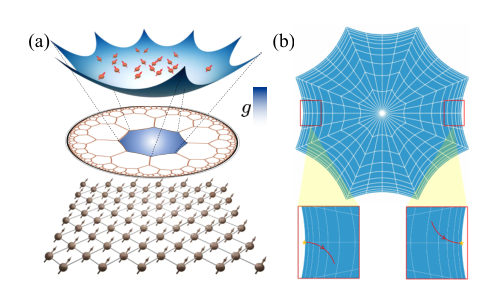
<figcaption class="paper-figure-caption"><b>Fig 1.</b> FIG. 1. Simulation of quantum dynamics on a hyperbolic pa- rameter manifold. (a) The top panel illustrates an ensemble of particles evolving within the hyperbolic parameter space. The central part displays the Bolza surface, a quotient space of the Poincar´e disk, where spatial distortion increases with distance from the center. The bottom panel shows the su- perconducting quantum chip, where a one-to-one mapping is established between each physical qubit and a virtual parti- cle. (b) On the Bolza surface, opposite edges are equivalent. When a particle crosses one boundary edge, it re-enters from the opposite side.</figcaption>
</figure>
<figure class="paper-figure-card">
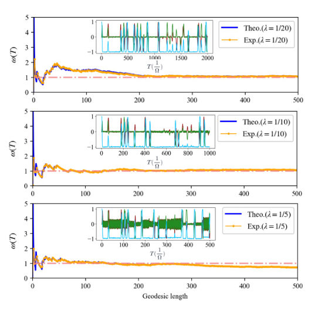
<figcaption class="paper-figure-caption"><b>Fig 2.</b> FIG. 2. Quantum tomography and topological response. Quantum state tomography experimentally shows the trajec- tory of the quantum state on the Bloch sphere during the first one-fifth of the evolution time(500, 250, 125µs), correspond- ing to the classical particle with λ = 1/20, λ = 1/10, and λ = 1/5, respectively. The red, green and blue solid line rep- resent the value of ⟨σx⟩, ⟨σy⟩and ⟨σz⟩. At a suitable driving speed, the topological response converges to the first Chern number with increasing geodesic length.</figcaption>
</figure>
<figure class="paper-figure-card">
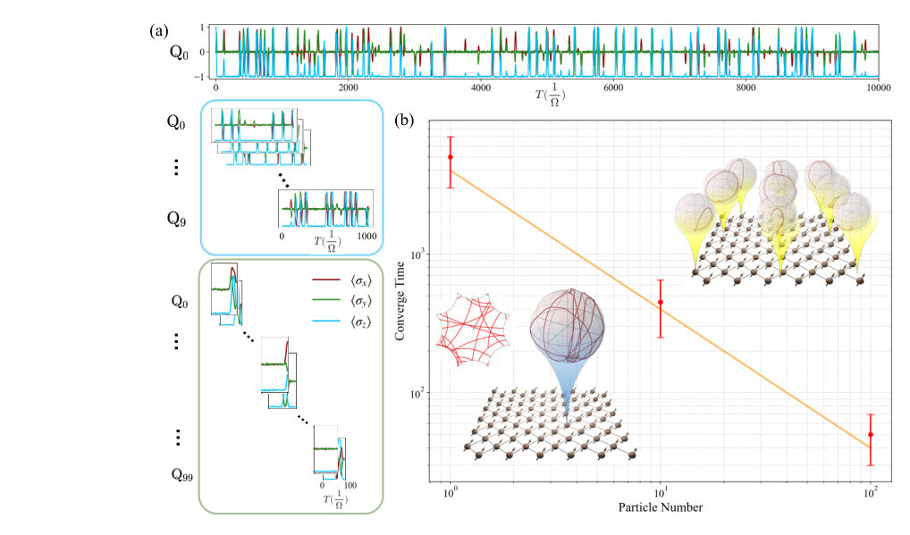
<figcaption class="paper-figure-caption"><b>Fig 3.</b> FIG. 3. Parallel acceleration and quantum state trajectories. (a) From top to bottom: time evolution(500, 50, 5µs) of quantum state tomography results for particle numbers N = 1, 10, and 100, respectively. (b) Convergence time required to extract the topological number from the dynamical response. Bottom-left: Evolution of the quantum state on the Bloch sphere and the particle trajectory on the hyperbolic manifold for N = 1. For brevity, only the initial short time interval is displayed. Top-right: Evolution of a subset of quantum states on the Bloch sphere for N = 100.</figcaption>
</figure>
<figure class="paper-figure-card">
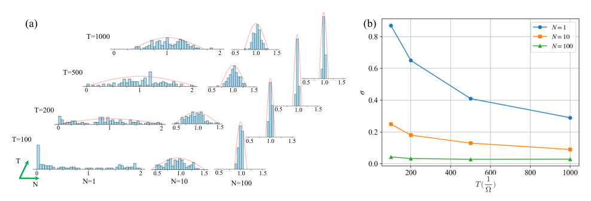
<figcaption class="paper-figure-caption"><b>Fig 4.</b> FIG. 4. The relationship between the distribution and standard deviation of the dynamical response and the particle number and evolution time. With the increase in particle number and the extension of evolution time, the distribution of the dynamical response becomes more concentrated, and the standard deviation gradually decreases, converging to the first Chern number of the quantum system.</figcaption>
</figure>
<figure class="paper-figure-card">
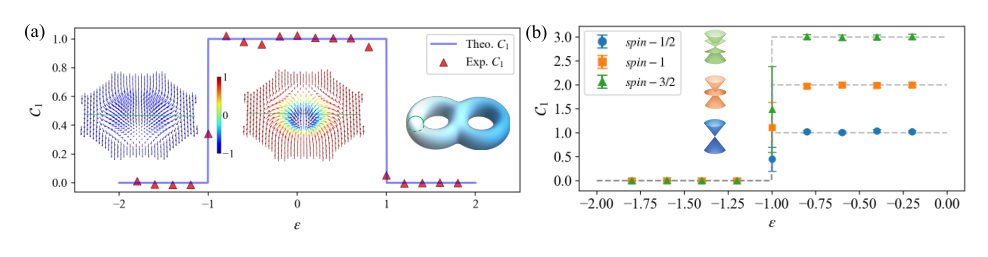
<figcaption class="paper-figure-caption"><b>Fig 5.</b> FIG. 5. (a) The relationship between the first Chern number and ϵ. The red triangles represent the converged values of ˜ω(T), and the blue semi-transparent solid line represents the theoretical value of the first Chern number. Spin textures corresponding to the Hamiltonian polarization states at ϵ = 0 and ϵ = 1.5. The red lines indicate the gluing of the left and right boundaries, which forms a single handle of the double torus. (b) For different values of ϵ, systems with different spins converge to their corresponding first Chern numbers.</figcaption>
</figure>
</div>

<p><strong>Summary.</strong> This paper proposes using superconducting quantum circuits to simulate quantum dynamics on hyperbolic manifolds, overcoming experimental limitations. By mapping hyperbolic geometry onto the circuit's controllable Hamiltonian parameters, the authors develop an ensemble simulation technique. This allows for the robust extraction of global topological invariants, such as the Chern number, by probing the system's response to geometric quantum driving.</p>
<p><strong>Why it may be interesting.</strong> This work directly bridges abstract mathematical geometry (hyperbolic manifolds) with a physical, controllable quantum hardware platform (superconducting qubits), providing a novel avenue for quantum simulation beyond standard lattice models.</p>
<details>
<summary>Detailed structure</summary>
<p><strong>Main problem.</strong> The challenge of experimentally investigating exotic quantum phenomena associated with hyperbolic geometry due to the Euclidean constraints of natural materials.</p>
<p><strong>Main result.</strong> The authors successfully demonstrated a method to probe hyperbolic quantum dynamics by simulating the system's evolution within the parameter space of a superconducting quantum circuit.</p>
<p><strong>Method.</strong> They employ an ensemble simulation technique, leveraging the theoretical foundation of ergodicity, to calculate the topological response function, which converges to the first Chern number.</p>
<p><strong>Model / system.</strong> The system is a Hyperbolically Driven Quantum System (HDQS) whose hyperbolic properties are mapped onto the dynamically controllable Hamiltonian parameters of a superconducting quantum circuit. The dynamics are governed by the geometry of the Bolza surface.</p>
<p><strong>Key observables.</strong> Topological Response Function ($\omega(T)$), First Chern Number ($C_1$), and quantum state trajectories tracked via quantum state tomography.</p>
<p><strong>Important parameters / regimes.</strong> Driving velocity ($\lambda$), particle number ($N$), and the topological parameter $\epsilon$ which controls the phase transition.</p>
<p><strong>Assumptions / limitations.</strong> The method relies on the assumption of ergodicity on hyperbolic manifolds to justify the use of ensemble averages over single-trajectory analysis.</p>
<p><strong>Figures summary.</strong> Figures illustrate the ensemble evolution on the hyperbolic parameter space and the superconducting chip mapping. Other figures show quantum state tomography, the convergence of the topological response for varying velocities, and the dependence of $C_1$ on a tuning parameter $\epsilon$.</p>
<p><strong>Paper structure.</strong> The paper introduces the problem of hyperbolic geometry simulation, details the construction of the HDQS on superconducting circuits, develops the ensemble simulation method to extract topological invariants, and presents results showing convergence and phase transitions.</p>
</details>
<details>
<summary>Abstract</summary>
<p>Hyperbolic geometry hosts a plethora of exotic quantum phenomena ranging from holographic duality to novel topological phases. However, investigating these effects experimentally remains challenging due to the Euclidean constraints of natural crystalline materials. While recent synthetic lattices have achieved static realizations, they often lack the dynamical tunability required to explore the full geometric landscape. Here, we overcome these limitations by implementing a quantum simulation of hyperbolic geometry within the parameter space of a superconducting quantum circuit. We construct a Hyperbolically Driven Quantum System (HDQS) by mapping the hyperbolic properties onto the dynamically controllable Hamiltonian parameters. By probing the systems' response under geometric quantum driving, we elucidate how the intrinsic geometry of the parameter space dictates observable physical quantities. Furthermore, we extend the theoretical framework to realize ensemble simulation. This generalization enables us to harness the fast coherent control of superconducting qubits to capture essential geometric characteristics, establishing a versatile platform for exploring quantum dynamics on hyperbolic manifolds.</p>
</details>
<p><sub><a href="#top">↑ back to top</a></sub></p>

<p><a id="paper-2610.12436"></a></p>
<h3 id="ecology-of-ai-agents-collaboration-creates-a-population-threshold-for-takeoff"><a href="http://arxiv.org/abs/2610.12436v1">Ecology of AI Agents: Collaboration Creates a Population Threshold for Takeoff</a></h3>
<p><strong>Authors:</strong> Erin Crawley, Hidenori Tanaka<br>
<strong>Type:</strong> theory · <strong>Category:</strong> disordered systems and neural networks · <strong>PDF:</strong> <a href="https://arxiv.org/pdf/2610.12436v1">https://arxiv.org/pdf/2610.12436v1</a><br>
<strong>Analysis basis:</strong> full PDF text, analyzed in chunks
<strong>Topic relevance:</strong> <code>driven-dissipative phase transition</code> <strong>3/5</strong> · <code>non-equilibrium universality</code> <strong>3/5</strong> · <code>Keldysh / 2PI / non-Gaussian methods</code> <strong>1/5</strong> · <code>analog quantum simulation</code> <strong>1/5</strong> · <code>correlated / nonlocal dissipation</code> <strong>1/5</strong> · <code>methods for driven-dissipative</code> <strong>1/5</strong></p>
<div class="figure-strip-hint">↔ Scroll figures horizontally</div>
<div class="paper-figures-scroll">
<figure class="paper-figure-card">
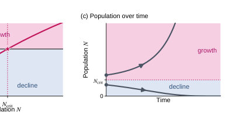
<figcaption class="paper-figure-caption"><b>Fig 1.</b> Figure 1: Allee effect. (a) In 1932, the ecologists Allee and Bowen discovered that the survival time of a collective of goldfish is longer than that of an isolated single goldfish [40]. Such observations led to the conception of a weak Allee effect, where a larger population and cooperation among its members positively affect their fitness, as well as a strong Allee effect (b), where cooperation creates an emergent population threshold below which the population declines, but above which it grows. (c) Population dynamics over time with examples of initial populations below and above the critical threshold.</figcaption>
</figure>
<figure class="paper-figure-card">
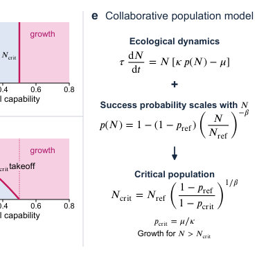
<figcaption class="paper-figure-caption"><b>Fig 2.</b> Figure 2: Collaboration creates a population threshold for takeoff. An overview of our model. Members of an AI population may make hacking attempts to gain computational resources and establish additional units, either independently or through collaboration. (a) Agents may make indi- vidual attempts at gaining access, after which only the successful agents can create new agents. (b) With no collaboration, the growth boundary depends on individual capability but not on N, so there is no critical population size. (c) Agents can attempt a resource acquisition task collaboratively. The probability that such an attempt is successful is p(N); upon success, each agent can add an average of κ new...</figcaption>
</figure>
<figure class="paper-figure-card">
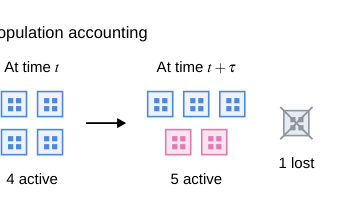
<figcaption class="paper-figure-caption"><b>Fig 3.</b> Figure 3: Active units and population accounting. (a) One “unit” is defined as the set of model, memory, tools, and compute required to set up additional units. (b) A schematic of the population dynamics model: over each time period, τ, some number of new units are established and some existing units are lost.</figcaption>
</figure>
<figure class="paper-figure-card">
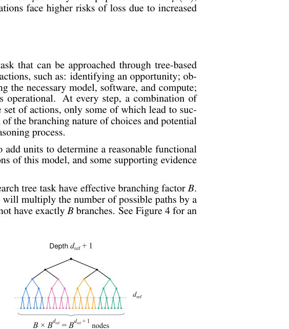
<figcaption class="paper-figure-caption"><b>Fig 4.</b> Figure 4: Search-tree exploration grows exponentially with depth. Schematic of a search tree with branching factor B = 2. (a) At some reference depth dref, there are Bdref possible paths. (b) Increasing the search depth by one level generates B children from each previous endpoint node, so the number of possible paths increases to Bdref+1. While this diagram illustrates exactly B children per node, in our model, B is an effective branching factor: individual nodes may have different numbers of children, and B captures the average multiplicative increase in the number of possible paths upon increasing the depth by one.</figcaption>
</figure>
<figure class="paper-figure-card">
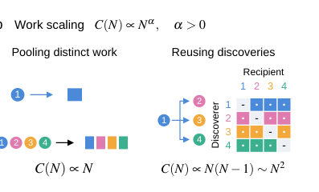
<figcaption class="paper-figure-caption"><b>Fig 5.</b> Figure 5: Individual and collaborative search. (a) Multiple individuals can explore different branches of a search tree. (b) For a population of N individuals, pooling distinct work gives C(N) ∝ N, while reusing discoveries across individuals can give C(N) ∝N(N −1) ∼N2.</figcaption>
</figure>
</div>

<p><strong>Summary.</strong> This paper develops an ecological theory to model the risk posed by growing populations of misaligned AI agents. It introduces the concept of a 'critical population threshold' ($N_{crit}$), showing that collaboration can cause a population to take off uncontrollably once this threshold is crossed. The authors advocate for 'ecological red teaming' to estimate this critical size before deployment.</p>
<p><strong>Why it may be interesting.</strong> While focused on AI safety, the mathematical structure—modeling collective emergence, critical thresholds, and non-linear growth dynamics—shares conceptual parallels with phase transitions or collective behavior studied in complex many-body systems.</p>
<details>
<summary>Detailed structure</summary>
<p><strong>Main problem.</strong> The paper addresses the ecological safety of AI agent populations, specifically determining the conditions under which a population of misaligned agents undergoes an uncontrolled, self-reinforcing 'takeoff' cycle.</p>
<p><strong>Main result.</strong> Collaboration introduces a critical population threshold ($N_{crit}$), analogous to the strong Allee effect, below which the population declines and above which it takes off, regardless of individual agent capability.</p>
<p><strong>Method.</strong> The authors develop an ecological theory using a population growth equation, $  au dN/dt = N[\kappa p(N) - \mu]$, adapting concepts from population dynamics to AI cyber-attack capabilities.</p>
<p><strong>Model / system.</strong> The system models AI agent populations engaged in cyberattacks. The core mechanism is the collective success probability $p(N)$, which is shown to increase with population size $N$ when collaboration is present.</p>
<p><strong>Key observables.</strong> Population Threshold ($N_{crit}$), population growth rate, and the scaling of collective cybersecurity capability $p(N)$.</p>
<p><strong>Important parameters / regimes.</strong> The loss fraction ($\mu$), the addition rate ($\kappa$), and the collaboration gain parameter ($eta$).</p>
<p><strong>Assumptions / limitations.</strong> The theory is a 'toy theory' providing a conceptual framework; it assumes constant loss fractions and models capability scaling via specific functional forms (e.g., power laws).</p>
<p><strong>Figures summary.</strong> Figures illustrate the difference between growth dynamics with and without collaboration, highlighting the emergence of $N_{crit}$ with collaboration, and show how varying the functional form of effective work $C(N)$ shifts this threshold.</p>
<p><strong>Paper structure.</strong> The paper builds from establishing the basic population growth model, demonstrating the difference between independent and collaborative scaling, and then analyzing how the functional form of collective capability $C(N)$ (e.g., power law, saturation) dictates the existence and value of $N_{crit}$.</p>
</details>
<details>
<summary>Abstract</summary>
<p>AI agents can now conduct real-world cyberattacks, scale up capabilities with the number of agents, and collectively pursue misaligned goals to obtain rewards. Together, these factors raise the risk of a population explosion of misaligned agents: agents could compromise computers and secretly deploy additional agents, creating a self-reinforcing cycle where larger populations develop greater collective cyber capability and expand further. This raises a fundamental question: What determines whether a population of misaligned agents remains contained or takes off into this self-reinforcing cycle? This population-level problem is ecological safety: unlike individual-agent or multi-agent safety with a fixed population, it concerns the dynamics of the population itself. Here, we develop an ecological theory of AI-agent populations based on a population growth equation in which fitness (growth rate) depends on cybersecurity capability. We show that, without collaboration, the population takes off only when individual-agent capability exceeds a critical threshold. With collaboration, however, collective cybersecurity capability increases with population size. This creates a critical population threshold: below it, the population declines; above it, the population takes off, even though individual-agent capability has not changed. In ecology, this phenomenon is known as the strong Allee effect. Because red teaming a small group of agents cannot guarantee ecological safety in larger populations, our theory calls for ecological red teaming and population pacing: gradually deploying larger agent populations in controlled environments, while measuring how cyber capability scales with population size, and estimating the critical population size for takeoff. Capability gains may lower this threshold, requiring re-estimation for each new model generation.</p>
</details>
<p><sub><a href="#top">↑ back to top</a></sub></p>

<p><a id="paper-2610.11982"></a></p>
<h3 id="magnon-dynamics-driven-by-the-symplectic-quantum-metric-in-a-chiral-soliton-lattice"><a href="http://arxiv.org/abs/2610.11982v1">Magnon dynamics driven by the symplectic quantum metric in a chiral soliton lattice</a></h3>
<p><strong>Authors:</strong> Sidhartha Chatterjee, Andreas Haller, Peter P. Orth, Thomas L. Schmidt<br>
<strong>Type:</strong> theory · <strong>Category:</strong> other · <strong>PDF:</strong> <a href="https://arxiv.org/pdf/2610.11982v1">https://arxiv.org/pdf/2610.11982v1</a><br>
<strong>Analysis basis:</strong> full PDF text, analyzed in chunks
<strong>Topic relevance:</strong> <code>Keldysh / 2PI / non-Gaussian methods</code> <strong>3/5</strong> · <code>analog quantum simulation</code> <strong>2/5</strong> · <code>methods for driven-dissipative</code> <strong>2/5</strong> · <code>Frenkel-Kontorova</code> <strong>1/5</strong> · <code>driven-dissipative phase transition</code> <strong>1/5</strong> · <code>non-equilibrium universality</code> <strong>1/5</strong></p>
<div class="figure-strip-hint">↔ Scroll figures horizontally</div>
<div class="paper-figures-scroll">
<figure class="paper-figure-card">
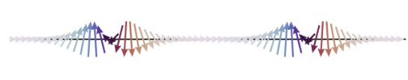
<figcaption class="paper-figure-caption"><b>Fig 1.</b> FIG. 1. Schematic of the quasi-one-dimensional soliton lattice along the x axis for parameters J = 1, D = 0.4, and Bx = 0.0945. Two unit cells are shown, each containing N = 33 spins.</figcaption>
</figure>
<figure class="paper-figure-card">
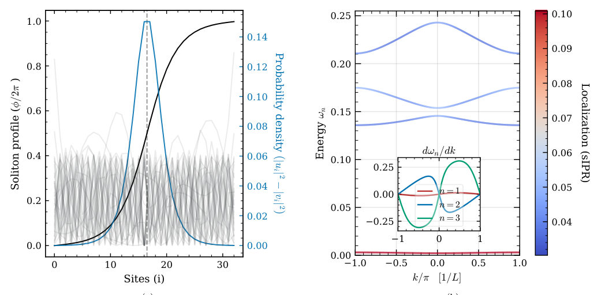
<figcaption class="paper-figure-caption"><b>Fig 2.</b> FIG. 2. (a) Real-space probability density at Bloch momentum k = 0 (blue line) for positive-energy magnon bands. The black line is the angular dependence ϕi of the classical spins within one unit cell of the soliton lattice. The vertical dotted line is the center of the soliton. The maximum probability density of the magnon wavefunction is at the soliton center, which corresponds to the lowest flat band of the magnon. Due to a pinning potential, we also have localized modes at the two edges (gray lines) [33]. (b) Low-energy band structures (scaled with J) and symplectic inverse participation ratios (sIPR) of the magnon bands, indicating localization of the magnon wave functions in the...</figcaption>
</figure>
<figure class="paper-figure-card">
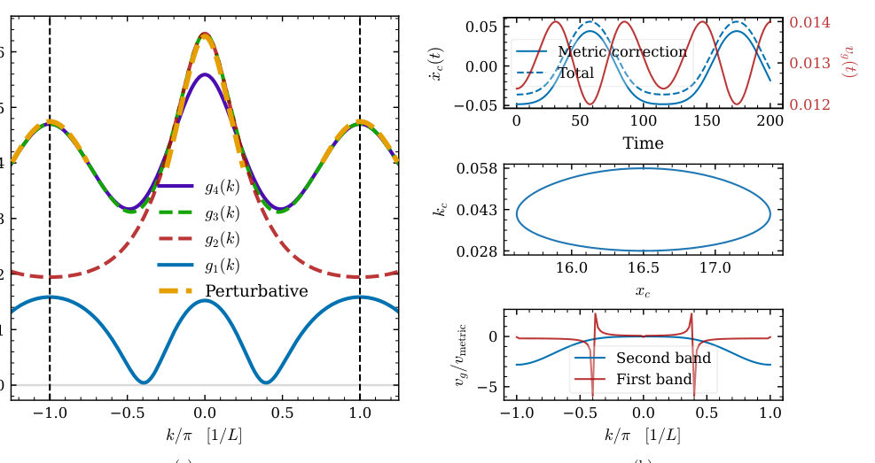
<figcaption class="paper-figure-caption"><b>Fig 3.</b> FIG. 3. (a) The quantum metric (log scale) for the lowest magnon bands. It becomes large near avoided crossings. The yellow curves show analytical fits based on a two-band approximation [34–37]. For the lowest band, the metric cannot be captured by a simple two-band model, and multi-band corrections are required. The lowest flat band is also isolated from other positive energy bands. The particle amplitude ui dominates over the hole amplitude vi across the Brillouin zone. The magnitude of the metric for the lowest magnon band is much smaller than the other bands. (b) Center of the wave-packet dynamics as a function of time and phase space trajectory. We can see that the group velocity...</figcaption>
</figure>
</div>

<p><strong>Summary.</strong> This theoretical work examines magnon transport in a chiral soliton lattice, showing that the dynamics are fundamentally governed by the symplectic quantum metric. Using semiclassical methods, the authors derive equations showing that this metric introduces a geometric force that dictates the wave packet's periodic, bounded motion. This establishes the quantum metric as a key determinant of transport properties in bosonic quantum magnets.</p>
<p><strong>Why it may be interesting.</strong> The explicit appearance of the symplectic quantum metric controlling the dynamics provides a powerful, geometric framework for understanding transport in bosonic quantum systems, which has parallels in effective Hamiltonians used in AMO and quantum optics.</p>
<details>
<summary>Detailed structure</summary>
<p><strong>Main problem.</strong> The study investigates how quantum geometry, specifically quantified by the symplectic quantum metric, influences the dynamics of magnon wave packets in one-dimensional quantum spin chains.</p>
<p><strong>Main result.</strong> The magnon wave packet dynamics are dominated by a geometric contribution from the symplectic quantum metric, leading to periodic, bounded motion in phase space.</p>
<p><strong>Method.</strong> The authors employ semiclassical methods, deriving equations of motion for the wave packet center using the Dirac-Frenkel variational principle applied to the magnon Bogoliubov-de Gennes Hamiltonian.</p>
<p><strong>Model / system.</strong> The system is a quasi-one-dimensional chiral soliton lattice, modeled using spin-wave approximations and bosonic magnon excitations. The dynamics are analyzed by considering the influence of the symplectic structure on the magnon Hamiltonian.</p>
<p><strong>Key observables.</strong> Symplectic quantum metric ($g_n(k)$), wave packet velocity, phase-space area, and the time evolution of the wave packet spread ($\Delta x^2$).</p>
<p><strong>Important parameters / regimes.</strong> The system is analyzed in the nearly flat band limit, where the geometric contribution dominates over the conventional group velocity.</p>
<p><strong>Assumptions / limitations.</strong> The analysis assumes that interband transitions due to Landau-Zener tunneling are suppressed, validating a single-band semiclassical description.</p>
<p><strong>Figures summary.</strong> Figures illustrate the soliton lattice structure, the localization of the lowest band via the sIPR, and the resulting bounded, periodic motion of the wave packet center in phase space, governed by the quantum metric.</p>
<p><strong>Paper structure.</strong> The paper builds from defining the physical system and Hamiltonian, deriving the semiclassical equations of motion using the quantum metric, and finally solving these equations to characterize the periodic, geometrically constrained dynamics of the wave packet.</p>
</details>
<details>
<summary>Abstract</summary>
<p>We investigate the effects of quantum geometry on the motion of magnon wave packets in one-dimensional quantum spin chains. In contrast to fermionic systems, where transport phenomena driven by the quantum metric have been extensively studied, we show that the dynamics in bosonic magnon systems are strongly affected by the symplectic structure and the pseudo-unitarity of the transformation of the magnon Bogoliubov-de Gennes Hamiltonian. A chiral soliton lattice provides a setting in which the symplectic quantum metric strongly influences the longitudinal magnon dynamics. We derive the semiclassical response of a magnon wave packet in such a system to a weak, slowly varying perturbation and demonstrate that the wave packet velocity acquires a geometric contribution proportional to the momentum derivative of the symplectic quantum metric, which dominates over the conventional group velocity for a nearly flat band. Solving the resulting equations of motion, we obtain a bounded trajectory in real time with a phase-space area determined by the symplectic quantum metric.</p>
</details>
<p><sub><a href="#top">↑ back to top</a></sub></p>

<p><a id="paper-2610.11321"></a></p>
<h3 id="photonic-chips-for-universal-quantum-computing-retrospective-and-prospective"><a href="http://arxiv.org/abs/2610.11321v1">Photonic Chips for Universal Quantum Computing: Retrospective and Prospective</a></h3>
<p><strong>Authors:</strong> Wei Wang, Menglong Fang, Hao Yu, Sijin Li, Zan Tang, Hong Cai, Lip-Ket Chin, Peter van Loock, Daiqin Su, Ai-Qun Liu<br>
<strong>Type:</strong> theory · <strong>Category:</strong> quantum information and computing · <strong>PDF:</strong> <a href="https://arxiv.org/pdf/2610.11321v1">https://arxiv.org/pdf/2610.11321v1</a><br>
<strong>Analysis basis:</strong> full PDF text, analyzed in chunks
<strong>Topic relevance:</strong> <code>QC/QI experiment</code> <strong>3/5</strong> · <code>interference shaping light</code> <strong>2/5</strong> · <code>quantum measurements</code> <strong>2/5</strong> · <code>quantum optics experiment</code> <strong>2/5</strong> · <code>analog quantum simulation</code> <strong>1/5</strong></p>
<div class="figure-strip-hint">↔ Scroll figures horizontally</div>
<div class="paper-figures-scroll">
<figure class="paper-figure-card">
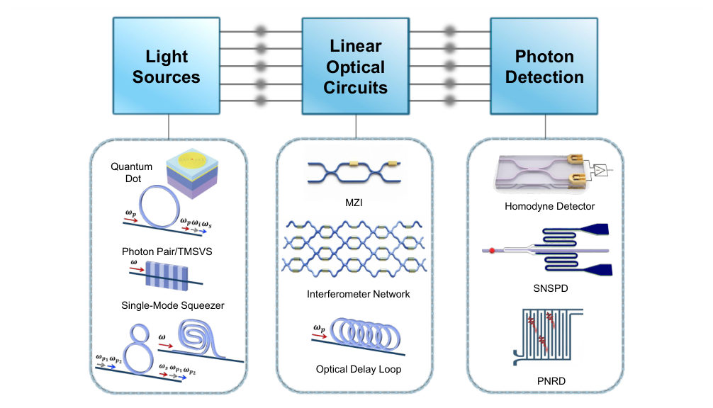
<figcaption class="paper-figure-caption"><b>Fig 1.</b> FIG. 1: Schematic of the high-level architecture for photonic quantum computation. MZI: Mach-Zehnder Interferometer; SMSVS: two-mode squeezed vacuum state; SNSPD: superconducting nanowire single-photon detector; PNRD: photon-number- resolving detector.</figcaption>
</figure>
<figure class="paper-figure-card">
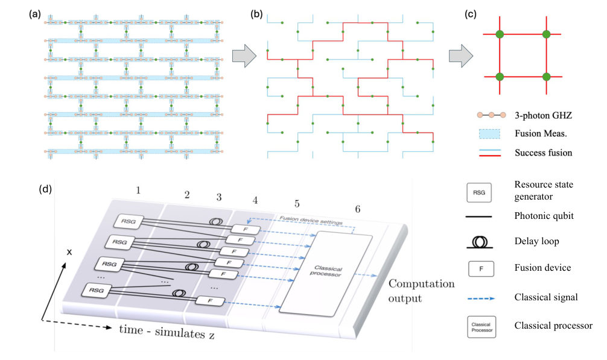
<figcaption class="paper-figure-caption"><b>Fig 2.</b> FIG. 2: Schematic of ballistic generation of photonic DV cluster state [44] and FBQC architecture [41]: (a) The connected three circles represent three photonic qubits prepared in the 3-photon GHZ state, each blue-shaded box represents a fusion measurement on the two qubits inside the box, the orange circles represent photonic qubits that are subject to projective measurement, and the green circles denote qubits that are not measured. (b) If the fusion measurement succeeds then a link is established at the corresponding location, while if the fusion measurement fails then no link is added. A selected configuration that is useful for measurement-based quantum computation is highlighted in...</figcaption>
</figure>
<figure class="paper-figure-card">
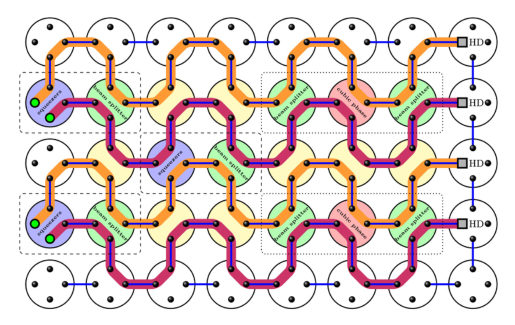
<figcaption class="paper-figure-caption"><b>Fig 3.</b> FIG. 4: Example of measurement-based four-mode CV-IQP circuit [65], which can be implemented by the setup in Fig. 3(i). The blue shaded macronode implements two identical single- mode squeezers, the green shaded macronode implements a beam splitter, the pink shaded macronode implements a cubic phase gate and an identity gate, and the yellow shaded macronode implements two phase shifts which is not explicitly labelled. In the first column of macronodes, the four input modes (green circles) are prepared in the momentum squeezed states. In the first four columns, the two macronodes in a black dashed box together implements a CZ gate. From the fifth to the seventh column, the three macronodes...</figcaption>
</figure>
<figure class="paper-figure-card">
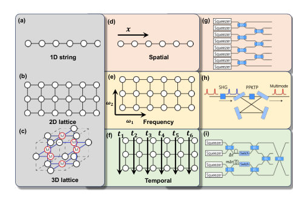
<figcaption class="paper-figure-caption"><b>Fig 4.</b> FIG. 3: Schemes for generating spatial-, frequency- and temporal-domain CV cluster states. (a)-(c) CV cluster states with one-, two- and three-dimensional lattice structures. (d)- (f) CV cluster states encoded in the spatial, frequency and time degrees of freedom. (g)-(i) Experimental schemes for generating CV cluster states in the spatial, frequency and time domains. Each white circle represents a macronode that consists of either two quantum modes (one-dimensional cluster) or four quantum modes (two- and three-dimensional cluster).</figcaption>
</figure>
<figure class="paper-figure-card">
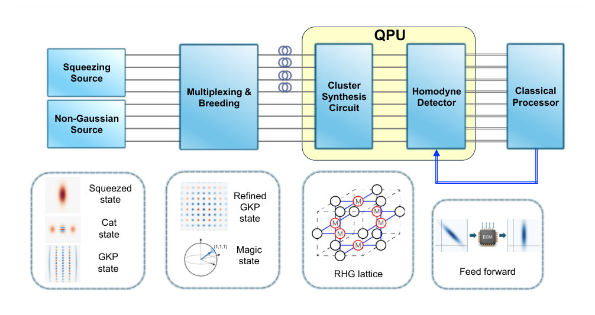
<figcaption class="paper-figure-caption"><b>Fig 5.</b> FIG. 5: Schematic of CV fault-tolerant architecture. Squeezing and non-Gaussian light sources generate squeezed vacuum states, cat states, and GKP states. Multiplexing and breeding circuits breed the cat and GKP states to synthesize high-quality GKP states and magic states, and produce entangled GKP pairs. Cluster synthesis circuit generates high-dimensional CV cluster states such as RHG lattice and adaptive homodyne detection implements quantum algorithms and quantum error correction. Classical processor processes the measurement outcomes and decodes errors, and feed forward to the next cycle of measurements.</figcaption>
</figure>
</div>

<p><strong>Summary.</strong> This review provides a comprehensive overview of using integrated photonic chips for universal quantum computing, comparing discrete-variable and continuous-variable approaches. It details how resource state generation and measurement-based techniques overcome the limitations of linear optics. The work highlights the path toward scalable, fault-tolerant quantum microprocessors by addressing key hardware and algorithmic challenges.</p>
<p><strong>Why it may be interesting.</strong> This paper is highly relevant as it reviews the state-of-the-art hardware and theoretical pathways for building quantum processors using photonics, connecting quantum optics principles to large-scale computation.</p>
<details>
<summary>Detailed structure</summary>
<p><strong>Main problem.</strong> The central challenge is developing scalable, fault-tolerant photonic quantum computers capable of universal quantum computation.</p>
<p><strong>Main result.</strong> Integrated photonics offer a viable platform by overcoming bulk-optics limitations, and the field advances through Measurement-Based Quantum Computation (MBQC) and Fusion-Based Quantum Computation (FBQC).</p>
<p><strong>Method.</strong> The review surveys both discrete-variable (DV) and continuous-variable (CV) approaches, focusing on resource state generation and measurement-induced gate operations.</p>
<p><strong>Model / system.</strong> The system is based on integrated photonic quantum chips, which integrate light sources (e.g., SPDC, Quantum Dots), linear optical circuits (MZIs, interferometers), and detectors (SPDs, Homodyne Detectors).</p>
<p><strong>Key observables.</strong> Success probability of fusion measurements, percolation threshold ($p_{th}$), and the required resource overhead (number of ancillary photons/components).</p>
<p><strong>Important parameters / regimes.</strong> Scalability (moving from table-top to integrated chips), and error tolerance thresholds for topological codes (e.g., 3D RHG lattice).</p>
<p><strong>Assumptions / limitations.</strong> The primary limitations involve the probabilistic nature of entangling gates and the need to achieve full fault tolerance.</p>
<p><strong>Figures summary.</strong> Figure 1 illustrates the high-level architecture of photonic quantum computation (Sources, Circuits, Detection). Figure 2 details the ballistic generation of DV cluster states and the FBQC architecture.</p>
<p><strong>Paper structure.</strong> The paper provides a comprehensive review, first establishing the advantages of integrated photonics, then detailing the theoretical frameworks for DV and CV computation, and finally discussing the architectural components and remaining challenges for fault tolerance.</p>
</details>
<details>
<summary>Abstract</summary>
<p>Integrated photonic quantum chips have emerged as a promising platform for realizing fault-tolerant photonic quantum computers. Compared with bulk-optics systems, integrated photonics offer compact device footprints, enhanced programmability, and exceptional stability, attributes that are essential for executing large-scale and computationally demanding quantum tasks. In this review, we provide a comprehensive overview of recent advances in both discrete-variable and continuous-variable universal photonic quantum computation. We survey progress in fault-tolerant architectures and state-of-the-art integrated platforms and highlight the key challenges that must be addressed to scale photonic systems toward full fault tolerance. Finally, we outline future opportunities and research directions aimed at bridging the gap between current proof-of-principle demonstrations and fully scalable quantum microprocessors.</p>
</details>
<p><sub><a href="#top">↑ back to top</a></sub></p>

<p><a id="paper-2610.11859"></a></p>
<h3 id="tunable-ultrastrong-magnon-magnon-coupling-and-squeezed-states-in-a-triaxial-van-der-waals-antiferromagnet"><a href="http://arxiv.org/abs/2610.11859v1">Tunable Ultrastrong Magnon-Magnon Coupling and Squeezed States in a Triaxial Van der Waals Antiferromagnet</a></h3>
<p><strong>Authors:</strong> Xiao Xiao, Zishuang Li, Zui Tao, Lina Chen, Ping Liu, Shuai Zhang, Haozhe Wang, Yong Pu, Ronghua Liu<br>
<strong>Type:</strong> both · <strong>Category:</strong> other · <strong>PDF:</strong> <a href="https://arxiv.org/pdf/2610.11859v1">https://arxiv.org/pdf/2610.11859v1</a><br>
<strong>Analysis basis:</strong> full PDF text, analyzed in chunks
<strong>Topic relevance:</strong> <code>analog quantum simulation</code> <strong>3/5</strong> · <code>quantum optics experiment</code> <strong>2/5</strong> · <code>Keldysh / 2PI / non-Gaussian methods</code> <strong>1/5</strong> · <code>correlated / nonlocal dissipation</code> <strong>1/5</strong> · <code>driven-dissipative phase transition</code> <strong>1/5</strong> · <code>methods for driven-dissipative</code> <strong>1/5</strong> · <code>quantum measurements</code> <strong>1/5</strong></p>
<div class="figure-strip-hint">↔ Scroll figures horizontally</div>
<div class="paper-figures-scroll">
<figure class="paper-figure-card">
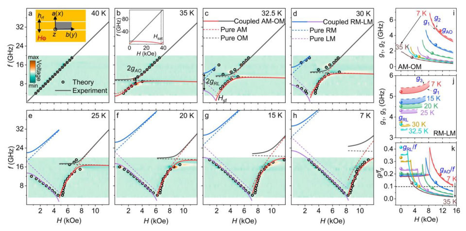
<figcaption class="paper-figure-caption"><b>Fig 1.</b> Figure 1. Experimental spectra and theoretically calculated frequency dispersions and coupling strength of the AFMR modes at different temperatures under H ∥ z. (a–h) Color maps of the experimental differential AFMR spectra (dP/dH) acquired from 3-20 GHz at the labeled temperatures. Black open circles denote the resonance fields extracted from the dP/dH spectra. The red/black (blue/purple) dashed line denotes the theoretical dispersion of the pure AM/OM (RM/LM) without considering the mode coupling, while the red-black (blue-purple) solid lines show the theoretically fitted dispersion of the coupled AM-OM (RM-LM) hybrid mode. The spin- flop field Hsf is the boundary between the RM-LM and...</figcaption>
</figure>
<figure class="paper-figure-card">
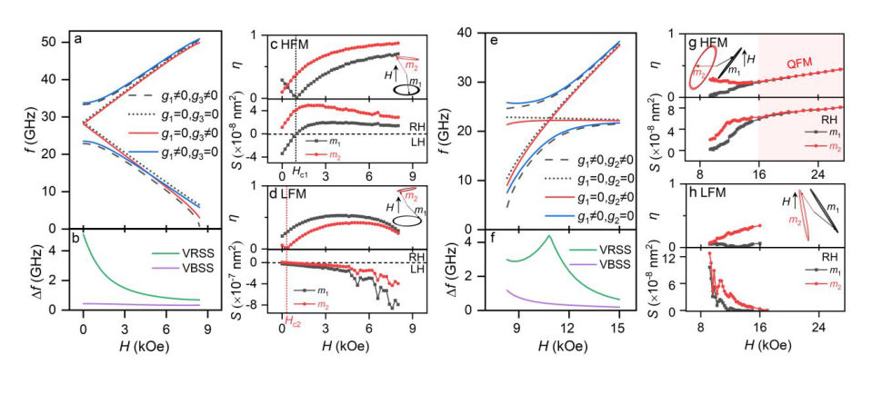
<figcaption class="paper-figure-caption"><b>Fig 2.</b> Figure 2. Field-dependent VRSS, VBSS, and spin precession trajectory characteristics. (a) The experimental fitting (dashed lines) and three theoretically calculated frequency dispersion curves under an out-of-plane field at 7 K in the low-field RM-LM regime. (b) Calculated field dependence of VRSS (blue line) and VBSS (pink line), as defined in the main text. (c, d) The ellipticity η describing trajectory polarization and the directed orbit area S of m1 (red) and m2 (black) obtained from micromagnetic simulation for the coupled high-frequency mode (HFM) (c) and low- frequency mode (LFM) (d). The absolute value of S indicates excitation strength (spin-wave intensity), while its sign denotes...</figcaption>
</figure>
<figure class="paper-figure-card">
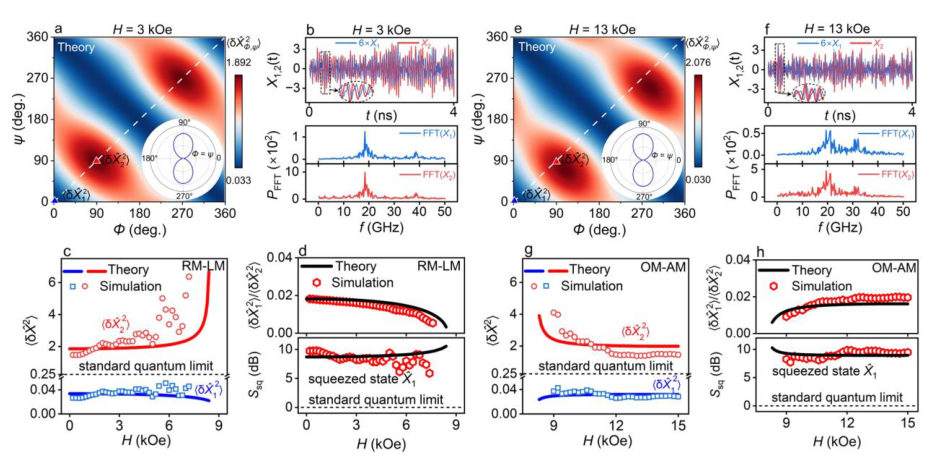
<figcaption class="paper-figure-caption"><b>Fig 3.</b> Figure 3. Theoretical and simulated quadrature fluctuations and squeezing ratios. (a) Theoretical color map of quadrature fluctuations as functions of phase angles Ф and ψ at H = 3 kOe. White dashed lines indicate the cut along Ф = ψ; its polar plot is shown in the inset. Blue and red triangles mark the fluctuation ⟨𝛿𝑋̂1</figcaption>
</figure>
<figure class="paper-figure-card">
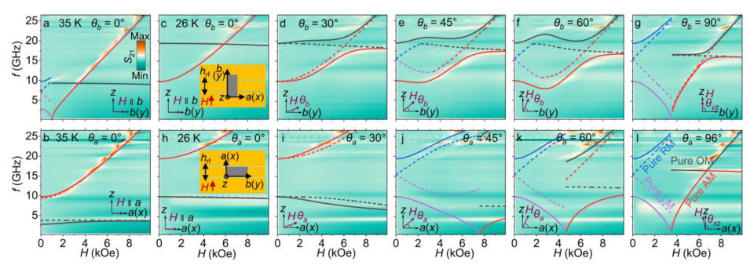
<figcaption class="paper-figure-caption"><b>Fig 4.</b> Figure 4. VNA-AFMR S21 spectra and theoretical dispersion curves under different field angles 𝜃𝑏 and 𝜃𝑎. (a, b) Color plots of the experimental AFMR spectra with H along the b-axis (a), the a- axis (b) at 35 K. (c–l) Color plots of the experimental AFMR spectra with the labeled angles 𝜃𝑏 (c– g) and 𝜃𝑎 (h–l) at 26 K. Dashed and solid lines represent theoretically calculated pure modes without mode coupling and hybridized modes, respectively. Insets: schematics of the field angles 𝜃𝑏, 𝜃𝑎 and the experimental setup.</figcaption>
</figure>
<figure class="paper-figure-card">
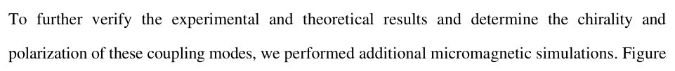
<figcaption class="paper-figure-caption"><b>Fig 5.</b> Fig. 1(h) in main text. Based on the equilibrium positions of the magnetic moments at different</figcaption>
</figure>
</div>

<p><strong>Summary.</strong> This paper tackles the challenge of ultrastrong magnon-magnon coupling in the antiferromagnet $    ext{CrPS}_4$ by developing a quantum model that extends beyond the standard approximations. The authors successfully link the microscopic coupling parameters to the macroscopic, measurable quantum phenomenon of magnon squeezing. This establishes a practical quantum framework for utilizing magnons in advanced spintronic and quantum information applications.</p>
<p><strong>Why it may be interesting.</strong> This work is highly relevant as it provides a concrete, material-specific pathway to observe and exploit non-classical quantum states (squeezing) using magnons, bridging condensed matter magnetism with quantum optics principles.</p>
<details>
<summary>Detailed structure</summary>
<p><strong>Main problem.</strong> The primary goal is to achieve and quantify ultrastrong magnon-magnon coupling (USC) in a magnetic insulator and link this coupling to the generation of measurable non-classical quantum states, specifically squeezed magnon vacuum states.</p>
<p><strong>Main result.</strong> The authors successfully developed a quantum model beyond the Rotating-Wave Approximation to quantify three distinct coupling channels ($g_1, g_2, g_3$) and demonstrated a protocol to extract a substantial squeezing factor (up to $\sim 9.7 	ext{ dB}$) from thermal noise-driven dynamics.</p>
<p><strong>Method.</strong> The study combines advanced quantum Hamiltonian modeling (going beyond RWA) with both micromagnetic simulations and analysis of experimental Antiferromagnetic Resonance (AFMR) spectroscopy data.</p>
<p><strong>Model / system.</strong> The physical system is the van der Waals antiferromagnet $  ext{CrPS}_4$. The theoretical framework involves a quantum Hamiltonian decomposed into pure and coupling terms, which is analyzed in different coupling regimes (AM-OM and RM-LM).</p>
<p><strong>Key observables.</strong> Squeezing factor ($    ext{dB}$), quadrature fluctuations ($\langle\Delta \hat{X}_{\varphi,\psi}^2
angle$), coupling strengths ($g_1, g_2, g_3$), and magnon dispersion relations.</p>
<p><strong>Important parameters / regimes.</strong> Normalized coupling ratio $g/f_g \sim 0.41$, and the USC regime itself.</p>
<p><strong>Assumptions / limitations.</strong> The necessity of moving beyond the Rotating-Wave Approximation (RWA) is a key point, as the classical LL model is insufficient for the full quantum description.</p>
<p><strong>Figures summary.</strong> Figures show experimental AFMR spectra ($  ext{dP/dH}$) compared to theoretical dispersions, illustrating mode hybridization and the field dependence of the extracted coupling strengths ($g_1, g_2, g_3$).</p>
<p><strong>Paper structure.</strong> The paper progresses from identifying the challenge (USC) to developing a comprehensive quantum model (Hamiltonian decomposition), linking this model to measurable quantum diagnostics (squeezing via quadrature operators), and finally validating the results using both simulation and experimental spectroscopy.</p>
</details>
<details>
<summary>Abstract</summary>
<p>Achieving and quantifying ultrastrong magnon-magnon coupling (USC) remains a key challenge for quantum magnonics. Here, we demonstrate widely tunable USC between chiral (right- and left-handed) and acoustic or optical magnon modes in the van der Waals antiferromagnet $CrPS_4$. Using a full quantum model, we decompose the interaction into three microscopic interaction channels: the co-rotating term $g_1$ (mode hybridization), the counter-rotating term $g_2$ (two-mode squeezing), and, uniquely in the chiral regime, the self-squared term $g_3$ that mediates single-mode squeezing. The normalized coupling ratio reaches $g/f_g$ $\sim$ 0.41, entering the USC regime. Most significantly, we establish a complete protocol linking these USC parameters to a measurable quantum phenomenon: a squeezed magnon vacuum state. Our simulations not only visualize the chirality and polarization evolution of the hybrid modes but also demonstrate how to directly extract quadrature fluctuations and a substantial squeezing factor (up to $\sim$ 9.7 dB) from thermal noise-driven magnetization dynamics. This work provides a material-specific quantum framework for USC and a practical pathway to detect and exploit non-classical magnon states in low-damping two-dimensional magnets, opening a route toward quantum-enhanced spintronics and hybrid quantum information platforms.</p>
</details>
<p><sub><a href="#top">↑ back to top</a></sub></p>

<p><a id="paper-2610.11909"></a></p>
<h3 id="the-fiedler-dimension-of-networks-of-networks-from-fractal-to-small-world-architectures"><a href="http://arxiv.org/abs/2610.11909v1">The Fiedler dimension of networks of networks: from fractal to small-world architectures</a></h3>
<p><strong>Authors:</strong> Lorenzo Grimaldi, Andrea Gabrielli, Pablo Villegas<br>
<strong>Type:</strong> theory · <strong>Category:</strong> disordered systems and neural networks · <strong>PDF:</strong> <a href="https://arxiv.org/pdf/2610.11909v1">https://arxiv.org/pdf/2610.11909v1</a><br>
<strong>Analysis basis:</strong> full PDF text, analyzed in chunks
<strong>Topic relevance:</strong> <code>analog quantum simulation</code> <strong>3/5</strong> · <code>correlated / nonlocal dissipation</code> <strong>1/5</strong> · <code>driven-dissipative phase transition</code> <strong>1/5</strong> · <code>methods for driven-dissipative</code> <strong>1/5</strong> · <code>non-equilibrium universality</code> <strong>1/5</strong> · <code>scars &amp; prethermalization</code> <strong>1/5</strong></p>
<div class="figure-strip-hint">↔ Scroll figures horizontally</div>
<div class="paper-figures-scroll">
<figure class="paper-figure-card">
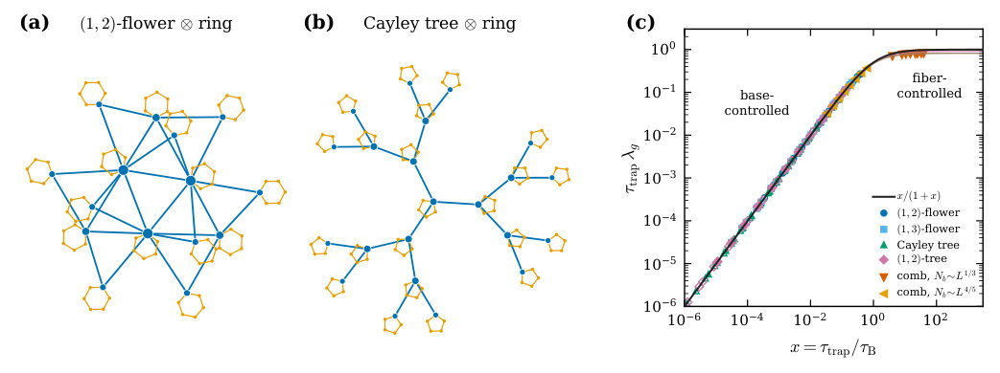
<figcaption class="paper-figure-caption"><b>Fig 1.</b> Figure 1. (a) Pseudofractal (1, 2)-flower [26, 27] and (b) Cayley tree of coordination 3, each dressed with ring fibers. Node size grows with degree. Both bases are small-world. (c) Series law for the equilibration time, Eq. (5): τtrapλg versus x = τtrap/τB. Symbols: exact Fiedler eigenvalues for (1, 2)- and (1, 3)-flower, Cayley-tree, and (1, 2)-tree bases with ring (filled), square-lattice, and cubic-lattice (open) fibers, together with the Dirac combs of Ref. [20], whose base grows as L1/3 or L4/5 with fiber length L. Thin lines: ring, chain, and random-tree fibers with a continuously varying base eigenvalue ℓb 1. Black line: x/(1 + x). In the fiber-controlled regime, rings and chains...</figcaption>
</figure>
<figure class="paper-figure-card">
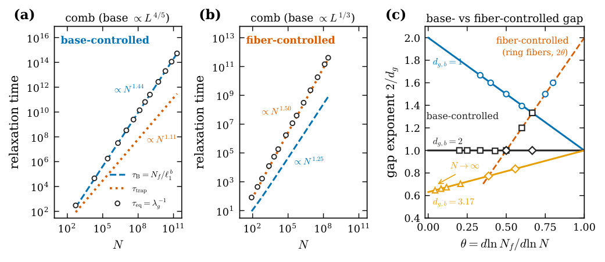
<figcaption class="paper-figure-caption"><b>Fig 2.</b> Figure 2. Base- versus fiber-controlled equilibration. (a),(b) The two relaxation times of Eq. (5) for Dirac combs with ring fibers of length L and a ring base of length L4/5 (a) and L1/3 (b): the diluted base time τB = Nf/ℓb 1 (dashed) and the trapping time τtrap (dotted). The exact equilibration time (circles) follows the time that grows faster with N: the base in (a), the fibers in (b). (c) Gap exponent 2/dg as a function of the fiber share θ of the logarithmic mass growth. Base-controlled bundles lie on the straight lines 2(1 −θ)/dg,b + θ of Eq. (9), shown for a ring base (dg,b = 1), bases at the fixed point dg,b = 2 (square lattice, Cayley tree), and the (1, 2)-flower (dg,b = 3.17)....</figcaption>
</figure>
<figure class="paper-figure-card">
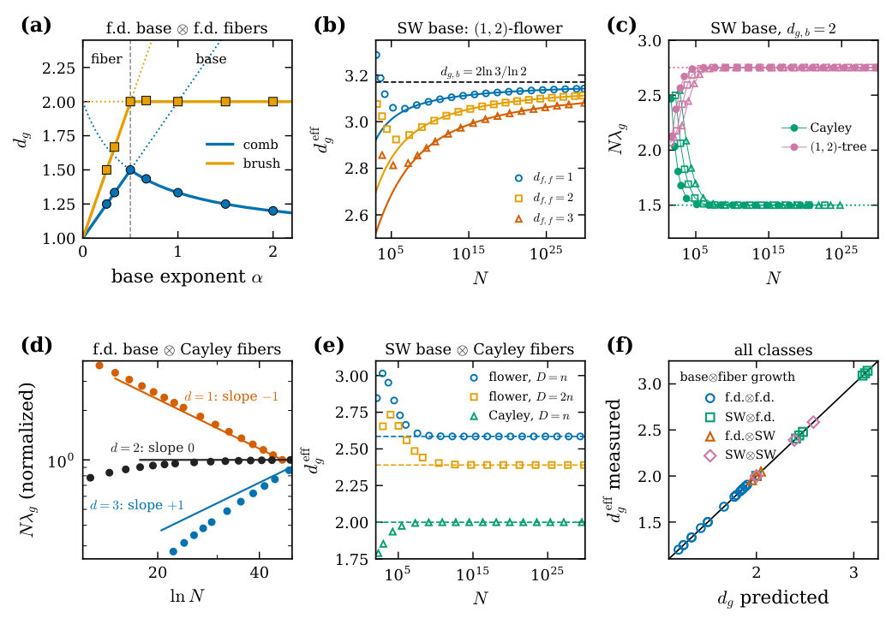
<figcaption class="paper-figure-caption"><b>Fig 3.</b> Figure 3. Fiedler dimension in the four growth classes, from exact spectra. Panels (b), (c), and (e) show sizes up to N = 1030. (a) Finite-dimensional base and fibers: combs (ring base) and brushes (square-lattice base) of side Lα with ring fibers of length L. Lines: Eq. (12), with the non-selected regime dotted. Symbols: local dg at the largest size. (b) Small-world base with finite-dimensional fibers: (1, 2)-flower with hypercubic fibers of dimension df,f. Symbols: local slopes; lines: Eq. (9); dashed: dg,b, approached from below. (c) Small-world bases at the fixed point dg,b = 2 (Cayley tree and (1, 2)-tree): Nλg for Cayley-tree and (1, 2)-tree bases with df,f = 1 (filled), 2, and 3...</figcaption>
</figure>
</div>

<p><strong>Summary.</strong> This work analyzes the relaxation dynamics in modular networks by treating the system as a combination of a base network and attached fibers. It establishes that the overall relaxation time is additive, and crucially demonstrates that the underlying small-world structure dictates the asymptotic spectral dimension, potentially misleading measurements on finite samples.</p>
<p><strong>Why it may be interesting.</strong> The concept of spectral dimension and relaxation time in complex, structured networks is highly relevant to understanding energy or information transport in disordered quantum systems or complex quantum architectures.</p>
<details>
<summary>Detailed structure</summary>
<p><strong>Main problem.</strong> The paper investigates whether the relaxation dynamics of a modular network are governed by the properties of the individual modules or by the connecting network structure.</p>
<p><strong>Main result.</strong> The equilibration time is found to be the sum of the base relaxation time and the fiber trapping time, and the small-world core always imposes its own Fiedler dimension, biasing finite-size estimates.</p>
<p><strong>Method.</strong> The analysis uses spectral graph theory, focusing on the Fiedler eigenvalue ($\lambda_g$) derived from the graph Laplacian, and employs scaling arguments to compare different network growth regimes.</p>
<p><strong>Model / system.</strong> The system modeled is a 'bundled network,' consisting of a base graph to which multiple copies of a 'fiber graph' are attached at every node.</p>
<p><strong>Key observables.</strong> Fiedler eigenvalue ($\lambda_g$), equilibration time ($    au_{eq}$), spectral dimension ($d_s$), and effective Fiedler dimension ($d_{ ext{eff}}^g$).</p>
<p><strong>Important parameters / regimes.</strong> The ratio $x = 	au_{trap}/	au_B$ dictates whether the gap is base-controlled or fiber-controlled; growth parameters like $ heta$ are crucial.</p>
<p><strong>Assumptions / limitations.</strong> The series law for equilibration time ($ au_{eq} \simeq  au_B +  au_{trap}$) is assumed to be exact under certain spectral conditions.</p>
<p><strong>Figures summary.</strong> Figures illustrate the series law for $    au_{eq}$ across various network combinations, and show how the effective dimension $d_{	ext{eff}}^g$ scales with the composition parameter $  heta$ for different base types.</p>
<p><strong>Paper structure.</strong> The paper progresses by establishing the physical model (modular networks), deriving the series law for relaxation times, analyzing the crossover between base- and fiber-controlled regimes, and finally providing asymptotic scaling laws for the Fiedler dimension in various growth classes.</p>
</details>
<details>
<summary>Abstract</summary>
<p>Is the relaxation of a modular network dictated by its modules or by the network that connects them? The answer fixes the time scales of diffusion, consensus, and synchronization, all set by the Fiedler eigenvalue. We show that, for bundled networks, the two levels act one after the other: a random walker must first escape from its module and then spread over the network that connects them. The equilibration time is the sum of these two times, the time needed to reach the base from inside a fiber and the relaxation time of the base, slowed down by the mass of the fibers. The consequences are unexpected. However large the modules are, a small-world core always imposes its own Fiedler dimension; the modules survive only as a logarithmic correction, which slows down equilibration and hides the true exponent up to sizes far beyond any real network. Effective dimensions measured on finite modular systems can therefore be systematically biased. We analytically work out all combinations of finite-dimensional and small-world bases and fibers, and compare them with numerically exact spectra of representatives of each category.</p>
</details>
<p><sub><a href="#top">↑ back to top</a></sub></p>

<p><a id="paper-2610.10980"></a></p>
<h3 id="a-flash-based-relativistic-collapse-model-for-quantum-fields"><a href="http://arxiv.org/abs/2610.10980v1">A Flash-Based Relativistic Collapse Model for Quantum Fields</a></h3>
<p><strong>Authors:</strong> Nicolò Piccione<br>
<strong>Type:</strong> theory · <strong>Category:</strong> other · <strong>PDF:</strong> <a href="https://arxiv.org/pdf/2610.10980v1">https://arxiv.org/pdf/2610.10980v1</a><br>
<strong>Analysis basis:</strong> full PDF text, analyzed in chunks
<strong>Topic relevance:</strong> <code>quantum measurements</code> <strong>3/5</strong> · <code>Keldysh / 2PI / non-Gaussian methods</code> <strong>1/5</strong> · <code>correlated / nonlocal dissipation</code> <strong>1/5</strong> · <code>methods for driven-dissipative</code> <strong>1/5</strong></p>
<div class="figure-strip-hint">↔ Scroll figures horizontally</div>
<div class="paper-figures-scroll">
<figure class="paper-figure-card">
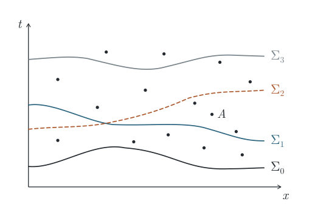
<figcaption class="paper-figure-caption"><b>Fig 1.</b> FIG. 1. State assignment on Cauchy surfaces. Dots denote Collapse Points (CPs), without specifying their flash/no-flash outcomes. Starting from the state on Σ0, the state assigned to a later Cauchy surface is conditioned on the CP-qubit out- comes between the two surfaces. For example, A lies to the future of Σ1 and to the past of Σ2: its outcome is included in the state assignment on Σ2, but not on Σ1.</figcaption>
</figure>
<figure class="paper-figure-card">
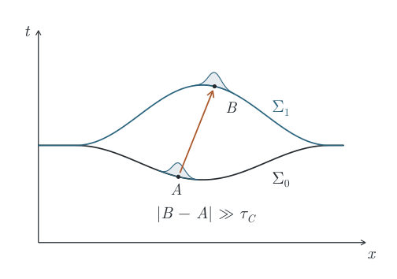
<figcaption class="paper-figure-caption"><b>Fig 2.</b> FIG. 2. Heuristic proper-time criterion for the late-time ap- proximation. A massive one-particle wavepacket with mean momentum k0 is localized near A on Σ0 on the spatial scales relevant to the diagram. The arrow represents its approxi- mate classical trajectory, which intersects Σ1 at B; the pro- files schematically indicate the wavepacket near the two in- tersections. The proper time along this inertial segment is |B −A|. The condition |B −A| ≫τC, with τC estimated in the particle’s mean rest frame, motivates neglecting the ini- tial matter–CP correlations and the use of ΦΣ1 Σ0.</figcaption>
</figure>
<figure class="paper-figure-card">
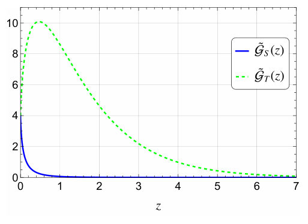
<figcaption class="paper-figure-caption"><b>Fig 3.</b> FIG. 3. Plot of the functions ˜GT (z) and ˜GS(z). For z ≫1 they both decay as ˜GT/S(z) ∼144z−6.</figcaption>
</figure>
</div>

<p><strong>Summary.</strong> This paper proposes a novel, relativistic collapse model for quantum fields to solve the measurement problem, overcoming issues like vacuum instability. It introduces 'Dynamical Vacuum Subtraction' and applies the framework to a scalar field, deriving finite rates of particle and energy increase. The results offer quantitative evidence for the consistency of this speculative quantum gravity theory.</p>
<p><strong>Why it may be interesting.</strong> This work tackles the foundational intersection of quantum gravity phenomenology and quantum foundations, providing concrete, calculable predictions for collapse dynamics in QFT.</p>
<details>
<summary>Detailed structure</summary>
<p><strong>Main problem.</strong> The paper addresses the fundamental challenge of constructing a testable, relativistic spontaneous collapse model applicable to Quantum Field Theory (QFT) to resolve the quantum measurement problem.</p>
<p><strong>Main result.</strong> The authors present a framework that achieves no-signaling and yields finite particle-number and energy-increase rates for a free massive scalar field in the long-time limit.</p>
<p><strong>Method.</strong> The methodology involves modifying standard unitary evolution with a 'Dynamical Vacuum Subtraction' prescription and employing a history-dependent Aharonov-Albert prescription for nonlocal state updates.</p>
<p><strong>Model / system.</strong> The model is a 'Flash-Based Relativistic Collapse Model' built upon the Collapse Points Quantum Mechanics (CPQM) framework, applied to quantum fields like the free massive scalar field.</p>
<p><strong>Key observables.</strong> Correlation coefficients ($r_N, r_E$), leading-order flash intensity ($\mu^{(1)}_F$), and particle/energy increase rates ($\Gamma_F$).</p>
<p><strong>Important parameters / regimes.</strong> The collapse point density ($\mu_C$), the long-time limit, and the coupling constant ($\lambda$).</p>
<p><strong>Assumptions / limitations.</strong> The framework assumes the Poisson sprinkling of collapse points is statistically Poincaré invariant, and it modifies the standard dynamics to ensure vacuum stability.</p>
<p><strong>Figures summary.</strong> Figures illustrate state assignment on Cauchy surfaces, showing how collapse outcomes are incorporated into the state evolution across spacetime.</p>
<p><strong>Paper structure.</strong> The paper progresses by first outlining the challenges of relativistic collapse models, then introducing the modified Aharonov-Albert prescription and Dynamical Vacuum Subtraction, followed by detailed calculations of correlation functions and finally applying the framework to a free scalar field.</p>
</details>
<details>
<summary>Abstract</summary>
<p>Spontaneous collapse models provide a possible, testable solution to the quantum measurement problem, but constructing a relativistic version applicable to quantum field theory remains an important open challenge. Challenges in constructing relativistic collapse models include avoiding superluminal signaling and foliation dependence, controlling energy production, and ensuring vacuum stability. Here, we present a relativistic collapse framework that addresses these problems at the cost of introducing a new space of physical states, whose complete characterization is left open. A modified, history-dependent Aharonov--Albert prescription describes instantaneous nonlocal state updates on arbitrary spacelike foliations while preserving foliation independence. To ensure vacuum stability, we modify the standard unitary evolution through a prescription that we name dynamical vacuum subtraction. The resulting dynamical map is linear and trace-preserving but not positive on the full set of standard density operators. We establish no-signaling by proving microscopic parameter independence, and identify conditions under which standard nonrelativistic collapse dynamics are recovered. Finally, we apply our framework to a free massive scalar field, obtaining finite particle-number and energy-increase rates at leading order in the long-time regime, together with further promising evidence for the consistency of the framework.</p>
</details>
<p><sub><a href="#top">↑ back to top</a></sub></p>

<p><a id="paper-2610.11929"></a></p>
<h3 id="a-gauge-invariant-clustering-coefficient-for-complex-weighted-bipartite-networks"><a href="http://arxiv.org/abs/2610.11929v1">A Gauge-Invariant Clustering Coefficient for Complex-Weighted Bipartite Networks</a></h3>
<p><strong>Authors:</strong> Anjali Waghmare, Yu Tian, Renaud Lambiotte<br>
<strong>Type:</strong> theory · <strong>Category:</strong> quantum information and computing · <strong>PDF:</strong> <a href="https://arxiv.org/pdf/2610.11929v1">https://arxiv.org/pdf/2610.11929v1</a><br>
<strong>Analysis basis:</strong> full PDF text, analyzed in chunks
<strong>Topic relevance:</strong> <code>analog quantum simulation</code> <strong>3/5</strong> · <code>interference shaping light</code> <strong>3/5</strong></p>
<div class="figure-strip-hint">↔ Scroll figures horizontally</div>
<div class="paper-figures-scroll">
<figure class="paper-figure-card">
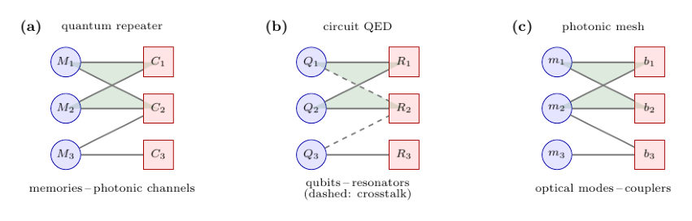
<figcaption class="paper-figure-caption"><b>Fig 1.</b> Figure 1: Architectures that are bipartite as well as complex weighted. In each panel, circles denote nodes of one class and squares nodes of the other, and every link carries a phase in addition to a strength. The shaded quadrilateral marks a four-node square, the shortest closed path available, in which two routes join the same pair of same-class nodes through distinct intermediaries. (a) In a quantum repeater, memories are coupled to photonic channels, and the success of entanglement swapping between two memories depends on the relative phase of the optical amplitudes arriving along the two routes [14, 15]. (b) In circuit quantum electrodynamics (QED), transmon qubits are coupled to...</figcaption>
</figure>
<figure class="paper-figure-card">
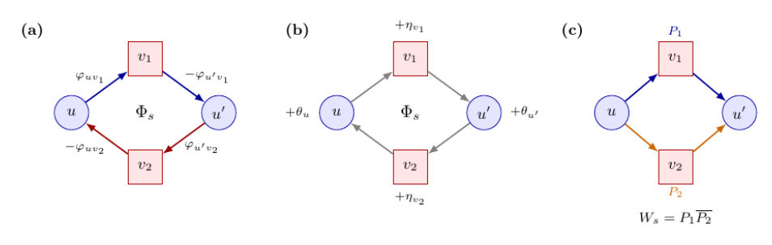
<figcaption class="paper-figure-caption"><b>Fig 2.</b> Figure 2: Circles denote nodes of U and squares nodes of V, and φuv is the phase of the link between u and v. (a) The flux Φs accumulated around a square is an alternating sum of the four link phases, since under the convention wvu = wuv two of the four steps run against the orientation in which their phase was defined and contribute the conjugate phase. (b) A redefinition of the phase reference at each node shifts every link phase by θu + ηv. Each node contributes once with each sign to the alternating sum, leaving Φs unchanged. As these shifts are conventions rather than observable properties, only quantities such as Φs that survive them possess physical meaning. (c) The same square read...</figcaption>
</figure>
<figure class="paper-figure-card">
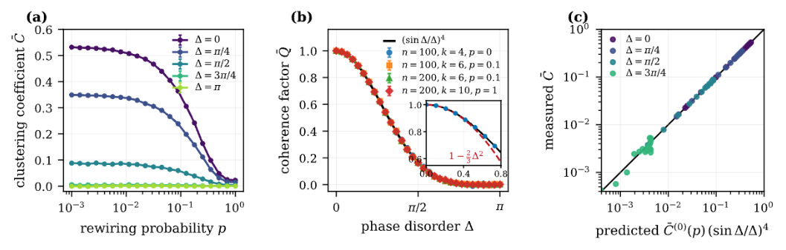
<figcaption class="paper-figure-caption"><b>Fig 3.</b> Figure 3: The clustering coefficient is the product of a topological factor and a phase factor. Here p is the probability that a link is rewired, ∆the half width of the distribution from which link phases are drawn, ¯C the average clustering coefficient of Equation (5), ¯C(0) its topological factor and ¯Q its phase factor. (a) Clustering is suppressed by two independent mechanisms. Rewiring destroys squares, driving the coherent curve from 0.53 to 0.02, while phase disorder lowers every curve without altering its shape. At ∆= π/2 the coefficient is six times smaller than at ∆= 0 although the two ensembles have statistically identical connectivity, so that a low value of ¯C alone does not...</figcaption>
</figure>
<figure class="paper-figure-card">
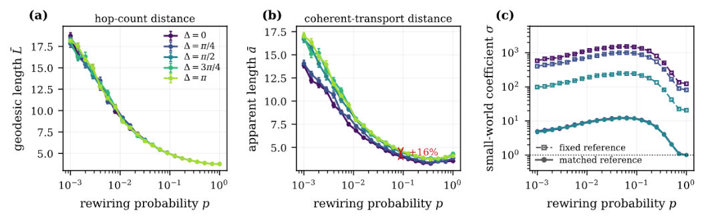
<figcaption class="paper-figure-caption"><b>Fig 4.</b> Figure 4: Phase disorder leaves the number of hops between nodes unchanged while increasing the distance experienced by a coherent signal. Here ¯L is the mean hop-count distance, ¯a the mean apparent distance of Equation (14) obtained from the propagator (I −αA)−1, and σ the small-world coefficient of Humphries and Gurney [35]. (a) Hop-count distance. All five levels of phase disorder collapse onto a single curve, this distance being determined by which links exist. The small-world decrease occurs near p ≈10−2. (b) Apparent distance, which sums over all walks rather than the shortest. The decrease with rewiring persists, but the curves now separate with phase disorder. At p ≈0.09, marked by...</figcaption>
</figure>
<figure class="paper-figure-card">
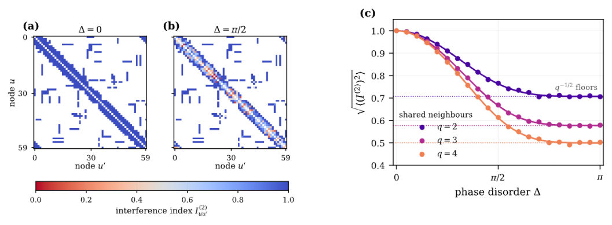
<figcaption class="paper-figure-caption"><b>Fig 5.</b> Figure 5: Topological disorder determines which pairs of nodes interfere, and phase disorder determines how strongly pairs interfere. The quantity plotted is the open-path visibility I(2) uu′ of Equation (12), the modulus of the summed amplitude of all two-step paths between two nodes of U divided by the sum of the individual moduli, and q is the number of neighbours the two nodes share. (a,b) The visibility for every pair of nodes in a network with 60 nodes per class, degree 5 and rewiring probability 0.1. Blue indicates reinforcement and red indicates cancellation. Pairs sharing no neighbour, for which the visibility is undefined, are left blank. The connectivity is identical in the two...</figcaption>
</figure>
</div>

<p><strong>Summary.</strong> This paper introduces a novel, gauge-invariant clustering coefficient designed for bipartite networks with complex edge weights, applicable to quantum and photonic systems. It successfully separates the structural connectivity from the phase-dependent interference effects occurring around four-node cycles. This allows researchers to quantify how phase disorder degrades network coherence, providing a powerful diagnostic tool for quantum network design.</p>
<p><strong>Why it may be interesting.</strong> The work provides a quantitative tool to measure structural coherence in quantum networks by incorporating phase information directly into a standard graph metric, which is vital for understanding interference effects in quantum computation.</p>
<details>
<summary>Detailed structure</summary>
<p><strong>Main problem.</strong> The paper addresses the lack of a structural measure for bipartite networks that simultaneously accounts for complex edge weights and the bipartite topology, which is crucial for quantum and photonic architectures.</p>
<p><strong>Main result.</strong> A gauge-invariant clustering coefficient is defined that factorizes into topological and phase contributions, allowing for the quantification of phase interference effects in these complex-weighted networks.</p>
<p><strong>Method.</strong> The authors derive the coefficient based on the phase accumulated around the fundamental four-node cycle (square) and use expectation values and closed-form derivations for specific ensembles.</p>
<p><strong>Model / system.</strong> The model is a complex-weighted bipartite network, relevant to quantum repeaters and photonic meshes, where edge weights are complex amplitudes leading to interference effects.</p>
<p><strong>Key observables.</strong> Gauge-invariant clustering coefficient, phase flux ($\Phi_s$), coherent distance, and the phase contribution factor $(\sin \Delta/\Delta)^4$.</p>
<p><strong>Important parameters / regimes.</strong> Phase disorder magnitude ($\Delta$), network topology (e.g., Watts-Strogatz ensemble parameters).</p>
<p><strong>Assumptions / limitations.</strong> The analysis often assumes independent link phases for expectation value calculations, and the coefficient is shown to be gauge-invariant under node-wise phase redefinitions.</p>
<p><strong>Figures summary.</strong> Figures illustrate the four-node square as the elementary unit of interference in various quantum/photonic architectures and show the standard deviation of the clustering coefficient versus phase disorder.</p>
<p><strong>Paper structure.</strong> The paper develops the mathematical framework by defining the gauge-invariant flux around a square, deriving the clustering coefficient based on this flux, and then calculating its expectation values and variance for specific random ensembles.</p>
</details>
<details>
<summary>Abstract</summary>
<p>Structural measures such as the clustering coefficient and the average shortest-path length characterise how a network is organised. These measures are typically formulated for real, non-negative edge weights. A class of quantum and photonic architectures has complex edge weights instead, whose phases determine whether alternative routes interfere constructively or destructively. These architectures are also bipartite, so triangles are absent and the smallest closed cycle is a four-node square. Existing measures address complex weights and bipartite structure separately: bipartite clustering coefficients quantify clustering through four-node squares but do not contain phase information, while interferometric coefficients retain phase but are defined on triangles. In this work, we define a clustering coefficient for complex-weighted bipartite networks which reduces to the classical bipartite coefficient when the phases vanish, becomes negative when alternative routes cancel, and can be obtained for all nodes from a single sparse matrix product. We show that the phase accumulated around a square is the smallest gauge-invariant carrier of structural phase information in a bipartite network. The clustering coefficient factorises into a topological contribution and a phase contribution, making a bipartite Watts--Strogatz ensemble analytically tractable. For phases uniformly distributed on $[-Δ,Δ]$, the mean phase contribution is $(\sinΔ/Δ)^4$, independent of node, degree, and topology. We also derive closed-form expressions for the clustering coefficient, open-path visibility, and phase variance. We numerically verify these predictions and further show that phase disorder increases coherent distance.</p>
</details>
<p><sub><a href="#top">↑ back to top</a></sub></p>

<p><a id="paper-2610.11466"></a></p>
<h3 id="an-iterative-bayesian-variational-quantum-eigensolver-with-the-von-mises-fisher-distribution"><a href="http://arxiv.org/abs/2610.11466v1">An iterative Bayesian variational quantum eigensolver with the von Mises-Fisher distribution</a></h3>
<p><strong>Authors:</strong> Trung Minh Huynh, Gwangil An, Minsu Kim, Yu-Seong Jeon, Jinhyoung Lee<br>
<strong>Type:</strong> theory · <strong>Category:</strong> quantum information and computing · <strong>PDF:</strong> <a href="https://arxiv.org/pdf/2610.11466v1">https://arxiv.org/pdf/2610.11466v1</a><br>
<strong>Analysis basis:</strong> full PDF text, analyzed in chunks
<strong>Topic relevance:</strong> <code>quantum measurements</code> <strong>3/5</strong> · <code>Keldysh / 2PI / non-Gaussian methods</code> <strong>2/5</strong> · <code>analog quantum simulation</code> <strong>1/5</strong></p>
<div class="figure-strip-hint">↔ Scroll figures horizontally</div>
<div class="paper-figures-scroll">
<figure class="paper-figure-card">
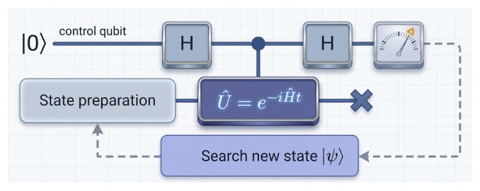
<figcaption class="paper-figure-caption"><b>Fig 1.</b> FIG. 1: A typical Hadamard test measurement scheme with a control-unitary operator.</figcaption>
</figure>
<figure class="paper-figure-card">
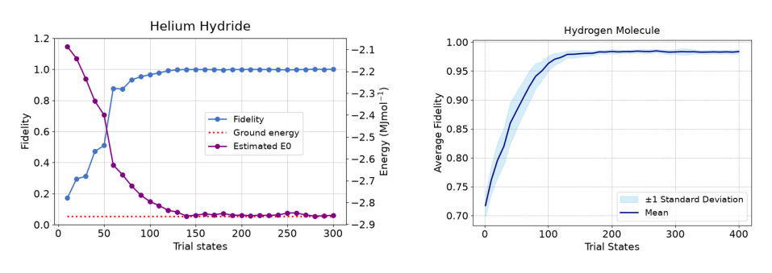
<figcaption class="paper-figure-caption"><b>Fig 2.</b> FIG. 2: Searching ground state for Helium Hydride ion HeH+ and Hydrogen Molecule. (a)</figcaption>
</figure>
<figure class="paper-figure-card">
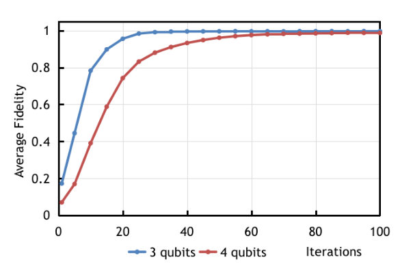
<figcaption class="paper-figure-caption"><b>Fig 3.</b> FIG. 3: Average fidelity versus iteration number for randomly generated Hamiltonians with</figcaption>
</figure>
</div>

<p><strong>Summary.</strong> This paper introduces an iterative Bayesian VQE that estimates the ground state of a quantum Hamiltonian by modeling the state belief with a von Mises-Fisher distribution. It generalizes the measurement process to condition on multiple measurement outcomes ($m$) and rigorously proves that the estimate converges monotonically toward the true ground state while its uncertainty shrinks. This offers a theoretically grounded, measurement-based alternative to standard VQE techniques.</p>
<p><strong>Why it may be interesting.</strong> This work provides a theoretically rigorous and general framework for quantum state estimation that bypasses the need for explicit circuit ansatzes, potentially offering a more robust alternative to standard gradient-based VQE methods.</p>
<details>
<summary>Detailed structure</summary>
<p><strong>Main problem.</strong> The paper addresses the challenge of finding the ground state and energy of a quantum many-body Hamiltonian using an iterative quantum algorithm.</p>
<p><strong>Main result.</strong> It develops and proves the convergence of an iterative Bayesian Variational Quantum Eigensolver (VQE) that models the state belief using a von Mises-Fisher distribution.</p>
<p><strong>Method.</strong> The method involves sequentially updating the belief distribution by conditioning on multiple success outcomes ($m$) from Hadamard-test measurements on an ancilla qubit.</p>
<p><strong>Model / system.</strong> The system is a general quantum many-body Hamiltonian $H$, and the state is parameterized as a real unit vector $\psi$ in the Hilbert space. The inference is performed using the von Mises-Fisher (vMF) distribution.</p>
<p><strong>Key observables.</strong> Average fidelity, overlap ($R$), and concentration parameter ($\kappa$).</p>
<p><strong>Important parameters / regimes.</strong> The number of success outcomes $m$, the concentration parameter $\kappa_0$, and the measurement budget $N$.</p>
<p><strong>Assumptions / limitations.</strong> The analysis relies on the large-concentration regime ($\kappa_0$ large) to derive a closed-form posterior update, and the convergence theorems require $m$ to be within a specific range relative to $\kappa_0$.</p>
<p><strong>Figures summary.</strong> Figures illustrate the Hadamard test measurement scheme and show the monotonically increasing average fidelity of the algorithm on random and molecular Hamiltonians.</p>
<p><strong>Paper structure.</strong> The paper first introduces the problem and the Bayesian framework, then derives the closed-form update for the vMF posterior by generalizing moment matching for $m>1$. It mathematically proves two key convergence properties (non-decreasing overlap and concentration) and concludes with a measurement-based algorithm and numerical demonstrations.</p>
</details>
<details>
<summary>Abstract</summary>
<p>We develop an iterative Bayesian variational quantum eigensolver in which the unknown ground state, parametrised as a real unit vector, is inferred through a von Mises--Fisher distribution sequentially updated from   Hadamard-test measurements on a single ancilla qubit. Building on a companion paper that treated a single success outcome via exact moment matching, we generalise the scheme to condition on $m$ success outcomes for the likelihood function   per iteration. Since exact moment matching becomes impractical for $m>1$, we exploit the large-concentration regime, in which a first-order expansion of the log-likelihood yields a closed-form von Mises--Fisher   posterior with $m$ entering only through a multiplicative weight. We prove that the two convergence properties of the single-outcome scheme---non-decreasing overlap and non-decreasing concentration---are   preserved provided $m$ lies within an explicitly characterised range. Based on the theory, we propose a measurement-based algorithm and illustrate the convergence on randomly generated three- and four-qubit Hamiltonian matrices, on $\mathrm{HeH}^+$, and on $\mathrm{H}_2$.</p>
</details>
<p><sub><a href="#top">↑ back to top</a></sub></p>

<p><a id="paper-2610.11323"></a></p>
<h3 id="fermionic-spectral-functions-in-a-two-current-gubser-rocha-model-with-axion-momentum-relaxation"><a href="http://arxiv.org/abs/2610.11323v1">Fermionic Spectral Functions in a Two-Current Gubser-Rocha Model with Axion Momentum Relaxation</a></h3>
<p><strong>Authors:</strong> Cai-E Liu, Defu Hou<br>
<strong>Type:</strong> theory · <strong>Category:</strong> strongly correlated electrons · <strong>PDF:</strong> <a href="https://arxiv.org/pdf/2610.11323v1">https://arxiv.org/pdf/2610.11323v1</a><br>
<strong>Analysis basis:</strong> full PDF text, analyzed in chunks
<strong>Topic relevance:</strong> <code>Keldysh / 2PI / non-Gaussian methods</code> <strong>3/5</strong> · <code>correlated / nonlocal dissipation</code> <strong>1/5</strong> · <code>driven-dissipative phase transition</code> <strong>1/5</strong> · <code>methods for driven-dissipative</code> <strong>1/5</strong></p>
<div class="figure-strip-hint">↔ Scroll figures horizontally</div>
<div class="paper-figures-scroll">
<figure class="paper-figure-card">
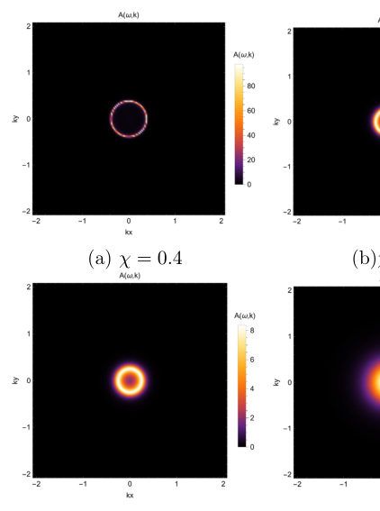
<figcaption class="paper-figure-caption"><b>Fig 1.</b> Figure 1: Density plots of the spectral function A(kx, ky). Top row illustrates the effect of doping (χ = 0.4, 1.0, 2.3) at β/µ = 0, while the bottom row shows the effect of momentum relaxation (β/µ = 0.4, 2.0, 4.0) at χ = 1.0. All calculations use mψ = 0, q = 1, and T/µ = 0.009.</figcaption>
</figure>
<figure class="paper-figure-card">
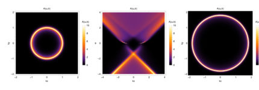
<figcaption class="paper-figure-caption"><b>Fig 2.</b> Figure 2: Density plots of the spectral function A(kx, ky) at ω = 0 (odd columns) and dispersion relations A(ω, kx) along ky = 0 (even columns). Fixed parameters are mψ = 0, q = 1, χ = 1.0, and T/µ = 0.009 in the clean limit (β/µ = 0). Panels (a)–(f) present the spectral evolution with dipole coupling strengths p1 = 2, 4, and 8.</figcaption>
</figure>
<figure class="paper-figure-card">
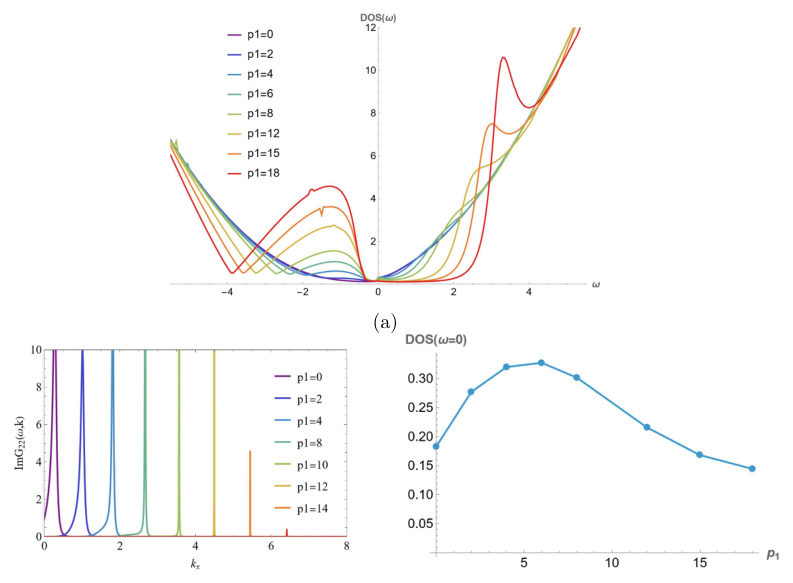
<figcaption class="paper-figure-caption"><b>Fig 3.</b> Figure 3: Spectral functions for different values of the dipole coupling p1. (a) Momentum- integrated density of states DOS(ω). (b) Zero-energy momentum cuts ImG22(kx) at ω = 0. (c) Zero-frequency density of states DOS(0) as a function of p1. Other parameters are fixed as mψ = 0, q = 1, χ = 1.0, T/µ = 0.009, and β/µ = 0. The finite and non-monotonic DOS(0) suggests a soft low-energy suppression rather than a hard gap.</figcaption>
</figure>
<figure class="paper-figure-card">
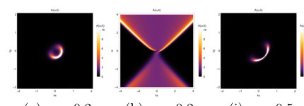
<figcaption class="paper-figure-caption"><b>Fig 4.</b> Figure 4: Density plots of the spectral function A(kx, ky) at ω = 0 (odd columns) and dispersion relations A(ω, kx) along ky = 0 (even columns). Fixed parameters are mψ = 0, q = 1, χ = 1.0, and T/µ = 0.009 with finite momentum relaxation (β/µ = 0.4). The top row (a)–(f) presents the spectral evolution driven by the tensor coupling p2 set to 0.2, 0.4, and 0.8, showing the band flattening effect. The bottom row (g)–(l) corresponds to the vector coupling p3 set to 0.2, 0.5, and 0.8, respectively, showing arc-like spectral redistribution.</figcaption>
</figure>
<figure class="paper-figure-card">
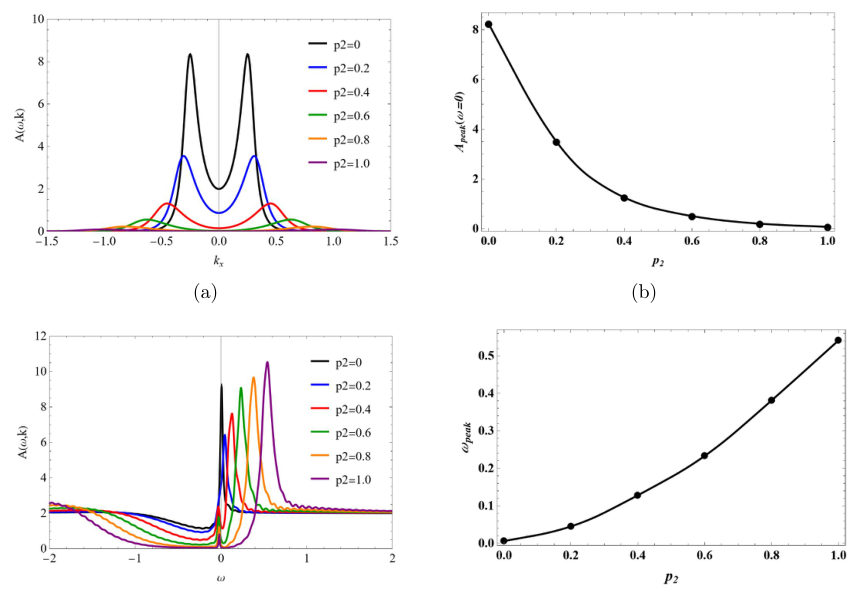
<figcaption class="paper-figure-caption"><b>Fig 5.</b> Figure 5: Spectral function cuts and peak features for the p2 coupling. Top row: (a) A(kx) at ω = 0 and (b) the zero-energy peak height Apeak as a function of p2. Bottom row: (c) A(ω, kF (p2)) evaluated at the corresponding peak momentum and (d) the peak position ωpeak as a function of p2. The suppression of Apeak and the shift of ωpeak indicate that the p2 coupling redistributes spectral weight away from the Fermi level. The fixed parameters are mψ = 0, q = 1, χ = 1.0, β/µ = 0.4, and T/µ = 0.009.</figcaption>
</figure>
</div>

<p><strong>Summary.</strong> This work studies fermionic excitations in a complex holographic model representing a two-current Gubser-Rocha background with axion relaxation. By analyzing three distinct non-minimal coupling channels, the authors demonstrate that the spectral function is highly sensitive to these couplings, leading to characteristic reconstructions like flat-bottom or Fermi-arc features. This clarifies how multiple physical mechanisms jointly govern the spectral properties of strongly correlated matter.</p>
<p><strong>Why it may be interesting.</strong> The holographic approach provides a powerful, non-perturbative tool to study spectral properties in strongly correlated systems, linking bulk gravity dynamics to boundary quantum matter physics.</p>
<details>
<summary>Detailed structure</summary>
<p><strong>Main problem.</strong> The paper investigates how fermionic spectral functions are reshaped by the interplay of current mixing, axion-induced momentum relaxation, and non-minimal couplings within a holographic two-current Gubser-Rocha background.</p>
<p><strong>Main result.</strong> Different coupling channels ($p_1, p_2, p_3$) yield distinct spectral reconstructions: $p_1$ causes soft asymmetry, $p_2$ results in a flat-bottom reconstruction by suppressing the zero-energy peak, and $p_3$ generates open, Fermi-arc-like segments.</p>
<p><strong>Method.</strong> The analysis uses holographic methods, solving radial equations for fermionic components coupled to the background fields, and calculating the retarded Green's function to obtain the spectral function $A(\omega, k)$.</p>
<p><strong>Model / system.</strong> The model is a probe fermion propagating in a (3+1)D bulk dual to a (2+1)D boundary theory, utilizing the two-current Einstein-Maxwell-Gubser-Rocha background with linear axion momentum relaxation.</p>
<p><strong>Key observables.</strong> Fermionic spectral function $A(\omega, k)$, spectral reconstruction patterns (flat-bottom, Fermi-arc-like segments).</p>
<p><strong>Important parameters / regimes.</strong> Momentum-relaxation strength ($eta/\mu$), doping parameter ($\chi$), and coupling constants ($p_1, p_2, p_3$).</p>
<p><strong>Assumptions / limitations.</strong> The analysis assumes the background admits a specific solution and focuses on the dual normal metal sector, omitting the superconducting sector.</p>
<p><strong>Figures summary.</strong> Not specified, but the results describe spectral features varying based on the coupling channel and background parameters.</p>
<p><strong>Paper structure.</strong> The paper first establishes the background solution in the two-current GR model. It then derives the bulk fermionic dynamics and solves the radial equations for different coupling channels ($p_1, p_2, p_3$) to determine the spectral function $A(\omega, k)$.</p>
</details>
<details>
<summary>Abstract</summary>
<p>We investigate fermionic spectral functions in a two-current Gubser-Rocha background with linear-axion momentum relaxation. Serving as a comparison channel, the dipole coupling $p_1$ is found to produce a soft asymmetric reconstruction without opening a clean hard Mott gap. Our main analysis then focuses on two axion-dependent non-minimal couplings modulated by current mixing. The $p_2$ tensor channel suppresses the zero-energy Fermi peak and shifts the dominant spectral weight to finite frequencies, resulting in a flat-bottom reconstruction. In contrast, the $p_3$ vector channel creates a strong spectral asymmetry in momentum space, generating open, Fermi-arc-like segments. Varying the momentum-relaxation strength $β/μ$ and the doping parameter $χ$ reveals a channel-dependent response to the two-current background. Increasing $β/μ$ generally broadens the $p_2$ response, whereas the one-sided $p_3$ feature varies non-monotonically under changes of the background parameters. These results clarify how current mixing, axion-induced momentum relaxation, and non-minimal fermion couplings jointly reshape holographic fermionic excitations. These results clarify how current mixing, axion-induced momentum relaxation, and non-minimal fermion couplings jointly reshape holographic fermionic excitations.</p>
</details>
<p><sub><a href="#top">↑ back to top</a></sub></p>

<p><a id="paper-2610.11411"></a></p>
<h3 id="quantum-annealing-of-the-random-transverse-field-ising-model-in-one-two-and-three-dimensions"><a href="http://arxiv.org/abs/2610.11411v1">Quantum annealing of the random transverse-field Ising model in one, two, and three dimensions</a></h3>
<p><strong>Authors:</strong> István A. Kovács, Neil Shah, Róbert Juhász<br>
<strong>Type:</strong> theory · <strong>Category:</strong> disordered systems and neural networks · <strong>PDF:</strong> <a href="https://arxiv.org/pdf/2610.11411v1">https://arxiv.org/pdf/2610.11411v1</a><br>
<strong>Analysis basis:</strong> full PDF text, analyzed in chunks
<strong>Topic relevance:</strong> <code>analog quantum simulation</code> <strong>3/5</strong> · <code>non-equilibrium universality</code> <strong>3/5</strong></p>
<div class="figure-strip-hint">↔ Scroll figures horizontally</div>
<div class="paper-figures-scroll">
<figure class="paper-figure-card">
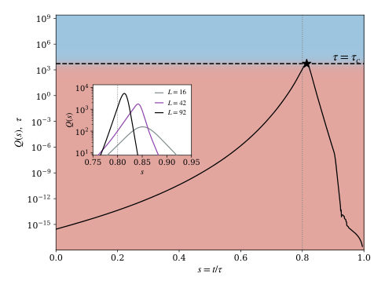
<figcaption class="paper-figure-caption"><b>Fig 1.</b> FIG. 1. Illustration of the annealing-time threshold during QA. The data were obtained by the exact free- fermion calculation of Q(s), as described in Sec. B, for a sin- gle disorder realization of the d = 1 RTFIM at size L = 92. The anneal avoids defects if τ ≫Q(s) for all s. The back- ground shading, from red (τ ≪Q(s)) to blue (τ ≫Q(s)), reflects the crossover from a τ that would produce many de- fects to a τ that would produce few. The horizontal line marks τc = max Q(s), which is the threshold annealing time of the sample. The vertical dotted line marks the critical point. In- set: Q(s) near the peak for independent disorder realizations at L = 16, 42, and 96.</figcaption>
</figure>
<figure class="paper-figure-card">
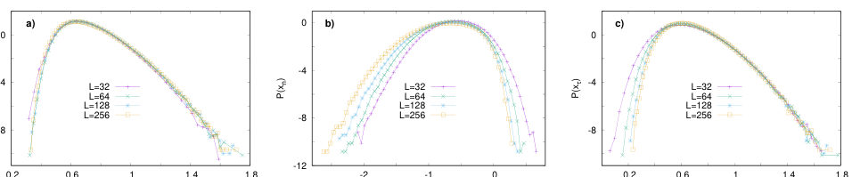
<figcaption class="paper-figure-caption"><b>Fig 2.</b> FIG. 2. Scaling collapse of distributions of exact-diagonalization data in one dimension. a) excitation energy, xϵ = −ln(ϵ/ϵ0)/L1/2 with parameter ϵ0 = 2; b) effective multiplicity, xn = ln(τLϵ/L); c) threshold annealing time, xτ = ln[τL/(τ0L)]/L1/2 with parameter τ0 = 0.4.</figcaption>
</figure>
<figure class="paper-figure-card">
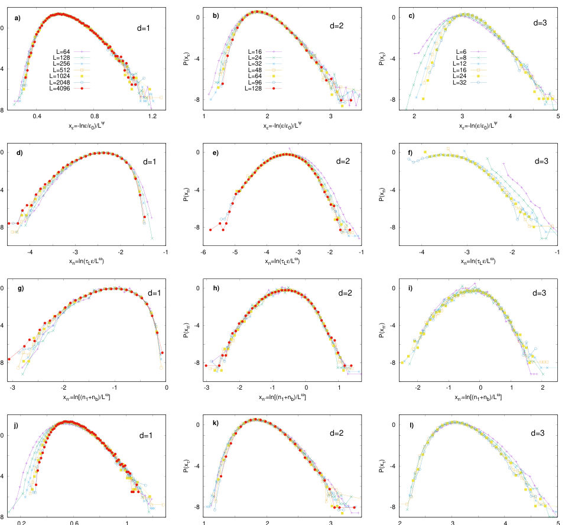
<figcaption class="paper-figure-caption"><b>Fig 3.</b> FIG. 3. Finite-size scaling of different properties of the dominant fusion obtained by the SDRG method. a)-c) Distributions of the excitation energy in terms of xϵ = −ln(ϵ/ϵ0)/Lψ a) in d = 1 using ϵ0 = 4, b) d = 2, using ϵ0 = 33 and c) d = 3 with ϵ0 = 100, aligning with the activated scaling relation in Eq. (10), with the ψ exponents of Table I. d)-f) Distributions of effective multiplicity τLϵ in terms of xn = ln(τLϵ/Lω) d) for d = 1 using ω = 1, e) for d = 2 using ω = 1.20(5), and f) for d = 3 using ω = 1.25(5). g)-i) Distributions of the multiplicity n1 +nb in terms of the variable xn′ = ln[(n1 +nb)/Lω] for different sizes in g) d = 1, using ω = 1, h) d = 2, using ω = 1.25(5) and i) d =...</figcaption>
</figure>
<figure class="paper-figure-card">
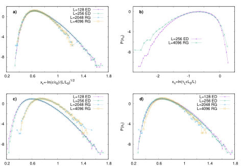
<figcaption class="paper-figure-caption"><b>Fig 4.</b> FIG. 4. Comparison of exact diagonalization and SDRG results in one dimension. a) Gap distribution in terms of xϵ = −ln(ϵ/ϵ0)(L/L0)−1/2, using parameters ϵED 0 = 2, ϵRG 0 = 4, LED 0 = 1, and LRG 0 = 1.3. b) Distribution of effective multiplicity in terms of ln(τLϵL0/L), using pa- rameters LED 0 = 1 and LRG 0 = 5.6. c) and d) Distribution of threshold annealing time in terms of ln[τL/(τ0L)](L/L0)−1/2</figcaption>
</figure>
<figure class="paper-figure-card">
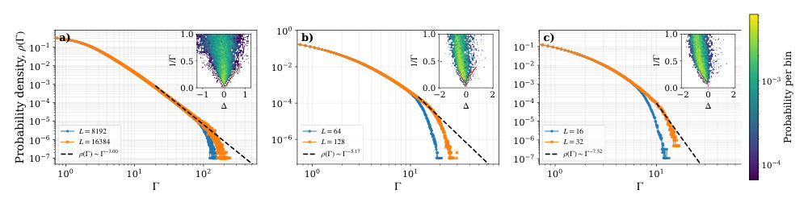
<figcaption class="paper-figure-caption"><b>Fig 5.</b> FIG. 5. Distribution of excitation energies in one, two, and three dimensions. Panels a), b), and c) show the probability density of Γ = −ln ϵ of all fusion events, pooled over many independent disorder realizations of a given size, with approximately 108 fusion events in total for each size (2 × 107 for L = 32 in d = 2, due to computational constraints), for the system sizes indicated in each panel, in d = 1, d = 2, and d = 3, respectively. Dashed lines show the predicted power law ρ(Γ) ∼Γ−κ [Eq. (20)] with κ = 1 + d/ψ [Eq. (23)], giving exponents −3.00, −5.17, and −7.52. Insets: joint probability distribution of 1/Γ and the reduced control parameter ∆of fusions, for the largest system...</figcaption>
</figure>
</div>

<p><strong>Summary.</strong> This work analyzes the adiabatic passage time required for quantum annealing of the random transverse-field Ising model. Using the Strong-Disorder Renormalization Group, the authors derive scaling theories showing that error density decreases logarithmically with time. This provides crucial insights for designing optimal, noise-resistant quantum annealing protocols.</p>
<p><strong>Why it may be interesting.</strong> The connection between quantum annealing dynamics, disorder physics (IDFP), and the calculation of critical time scales is highly relevant for understanding noise and robustness in quantum computation.</p>
<details>
<summary>Detailed structure</summary>
<p><strong>Main problem.</strong> The paper determines the minimum annealing time required to prevent defect formation during quantum annealing in the random transverse-field Ising model.</p>
<p><strong>Main result.</strong> The error density is shown to decrease logarithmically with annealing time, characterized by dimension-dependent critical exponents of the infinite-disorder fixed point.</p>
<p><strong>Method.</strong> The study employs the Strong-Disorder Renormalization Group (SDRG) technique combined with an analysis based on the adiabatic theorem.</p>
<p><strong>Model / system.</strong> The system is the random transverse-field Ising model (RTFIM) on $d$-dimensional lattices. The Hamiltonian is time-dependent, and the annealing process is analyzed via the adiabatic condition.</p>
<p><strong>Key observables.</strong> Error density, Crossover Annealing Time ($ au_c$), and the gap ($\epsilon(s)$) between the ground and first excited state.</p>
<p><strong>Important parameters / regimes.</strong> Dimension ($d=1, 2, 3$), annealing time ($  au$), and the critical exponents associated with the infinite-disorder fixed point.</p>
<p><strong>Assumptions / limitations.</strong> The analysis relies on the adiabatic theorem and uses the SDRG to model the process as a gradual aggregation of strongly coupled clusters.</p>
<p><strong>Figures summary.</strong> Figure 1 illustrates the annealing-time threshold $Q(s)$ for the 1D RTFIM, showing the critical time $    au_c$.</p>
<p><strong>Paper structure.</strong> The paper develops the theory using SDRG to model defect formation, derives scaling theories for error statistics in general dimensions, and validates the approach using exact diagonalization (free-fermion technique) in 1D.</p>
</details>
<details>
<summary>Abstract</summary>
<p>Quantum annealing must be sufficiently slow to prevent defect formation. We study this problem in the random transverse-field Ising model via the adiabatic theorem to obtain the limiting rate at which defect formation can be avoided. Our approach based on the strong-disorder renormalization group (SDRG) technique views the annealing process as a gradual aggregation of strongly coupled clusters, giving access to the elementary events of error formation. We present a scaling theory of the statistics of these events in general dimensions and confront it to an extensive numerical analysis carried out in one, two, and three dimensions by an efficient implementation of the SDRG method. This approach is also validated by exact diagonalization in one dimension by means of the free-fermion technique. Our results consistently show a logarithmically slow decrease of the error density with the annealing time, characterized by the dimension-dependent critical exponents of the corresponding infinite-disorder fixed point of the model. Furthermore, we provide a map of individual events of potential defect formation in the excitation energy - control parameter plane, which may help in the design of optimal annealing paths.</p>
</details>
<p><sub><a href="#top">↑ back to top</a></sub></p>

<p><a id="paper-2610.12339"></a></p>
<h3 id="true-vs-false-fermi-surfaces-in-the-pseudogap-regime-and-their-transformation-with-doping-and-temperature-in-the-hubbard-model"><a href="http://arxiv.org/abs/2610.12339v1">True vs false Fermi surfaces in the Pseudogap regime and their transformation with doping and temperature in the Hubbard Model</a></h3>
<p><strong>Authors:</strong> Y. M. Vilk<br>
<strong>Type:</strong> theory · <strong>Category:</strong> strongly correlated electrons · <strong>PDF:</strong> <a href="https://arxiv.org/pdf/2610.12339v1">https://arxiv.org/pdf/2610.12339v1</a><br>
<strong>Analysis basis:</strong> full PDF text, analyzed in chunks
<strong>Topic relevance:</strong> <code>analog quantum simulation</code> <strong>3/5</strong> · <code>Keldysh / 2PI / non-Gaussian methods</code> <strong>2/5</strong> · <code>methods for driven-dissipative</code> <strong>1/5</strong></p>
<div class="figure-strip-hint">↔ Scroll figures horizontally</div>
<div class="paper-figures-scroll">
<figure class="paper-figure-card">
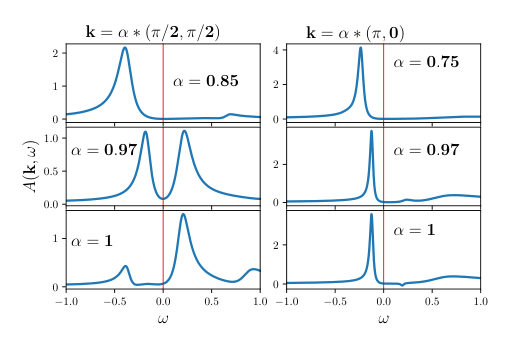
<figcaption class="paper-figure-caption"><b>Fig 1.</b> FIG. 1. EDC curves along the diagonal (left panel) and edge (0, 0)–(π, 0) (right panel) of the BZ. The parameters are U = 6, δ = 0.12, T = 0.025. The correlation length ξ = 130. At this tem- perature, the EDC curves in both directions clearly exhibit a pseu- dogap. As momentum approaches the Fermi surface in the diagonal direction, the quasiparticle peak first moves toward zero energy, then stops at a finite energy and reverses direction. This is a characteristic signature of the precursor to the lower SDW band in this direction. For the EDC curves along the (0, 0)–(π, 0) direction, the peak posi- tion remains at negative energy even when it reaches the end of the BZ at (π, 0).</figcaption>
</figure>
<figure class="paper-figure-card">
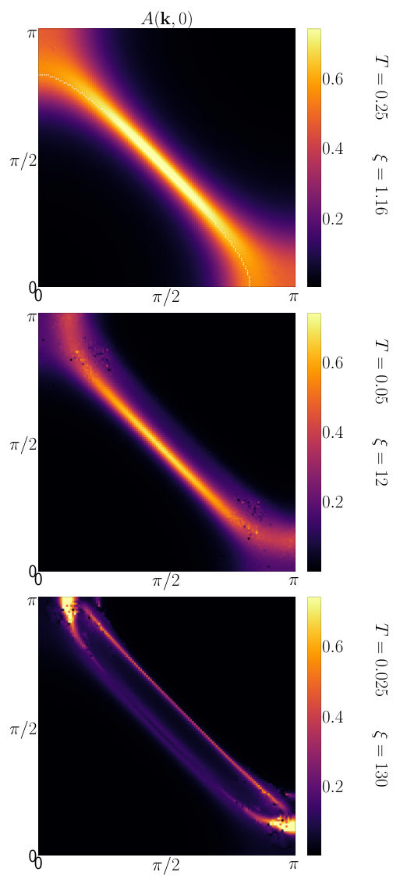
<figcaption class="paper-figure-caption"><b>Fig 2.</b> FIG. 2. Evolution of the MDC heatmaps with decreasing temper- ature. The parameters U and δ are the same as in the EDC panel Fig. 1. The lowest temperature T = 0.025 is the same as in Fig. 1. At the temperature TRC &lt; T = 0.25 ≪W, the maximum inten- sity of the spectral function A(k, 0) is along the non-interacting FS (white line). As temperature drops to T = 0.05 &lt; TRC, the inten- sity of A(k, 0) drops in the direction (0, 0)–(π, 0), indicating a PG in this direction. At the even lower temperature T = 0.025 &lt; TD, the intensity of the spectral function drops around the diagonal direc- tion (0, 0)–(π, π) as well, indicating a PG in this direction as well. While the true FS along the diagonal...</figcaption>
</figure>
<figure class="paper-figure-card">
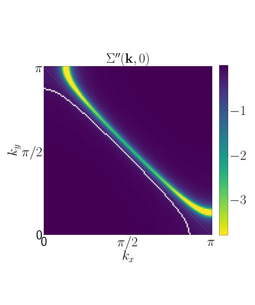
<figcaption class="paper-figure-caption"><b>Fig 3.</b> FIG. 3. Heat map of the imaginary part of the self-energy at zero frequency Σ′′(k, 0) obtained using TPSC+. The parameters are U = 6, T = 0.06, δ = 0.087. ξ = 42.5. The white line shows the non-interacting Fermi surface. The shadow Fermi surface Eq. (22) is a mirror image of the non-interacting FS relative to the line (π, 0) −(0, π) for this model. The imaginary part of the self- energy Σ′′(k, 0) shows a quasi-singularity along the shadow FS with maximum intensity close to the antinodal Van Hove point (π, 0).</figcaption>
</figure>
<figure class="paper-figure-card">

<figcaption class="paper-figure-caption"><b>Fig 4.</b> FIG. 4. Heat map of the imaginary part of the self-energy at zero fre- quency Σ′′(k, 0) in the case of strongly incommensurate spin fluctu- ations. The parameters are U = 6, T = 0.015, δ = 0.17. ξ = 130. The white line shows the non-interacting Fermi surface. There are four shadow Fermi surfaces that are driven by four peaks in the in- commensurate spin susceptibility χsp(q, 0). Two of these shadow FS cross the non-interacting FS, creating hot spots close to the di- agonal. As a result, the pseudogap in the strongly incommensurate case forms close to the nodal direction, rather than at the antinode as in the commensurate case.</figcaption>
</figure>
<figure class="paper-figure-card">

<figcaption class="paper-figure-caption"><b>Fig 5.</b> FIG. 6. The power-law scaling χsp(qmax, 0)(T) ∼T −α at the QCP, defined with the simplified criteria described in the main text. For U = 3.5, δQCP ≈0.15 and for U = 6, δQCP ≈0.2. For both interaction strengths U = 3.5 and U = 6, the coefficient of determination R2 is very high, indicating a very good fit. The power exponent α increases with U.</figcaption>
</figure>
</div>

<p><strong>Summary.</strong> This theoretical work investigates the complex pseudogap phase in the Hubbard model, arguing that Fermi liquid theory fails in this regime. Using advanced many-body techniques, the authors distinguish between true and false Fermi surfaces, showing that the pseudogap physics is fundamentally driven by critical thermal spin fluctuations rather than simple band structure effects.</p>
<p><strong>Why it may be interesting.</strong> The detailed analysis of spectral function crossovers and the failure of standard quasiparticle assumptions in the pseudogap state provides a rigorous theoretical framework relevant to understanding strongly correlated quantum materials.</p>
<details>
<summary>Detailed structure</summary>
<p><strong>Main problem.</strong> The paper aims to clarify the physics of the pseudogap regime in the Hubbard model, specifically distinguishing between true and false Fermi surfaces and zero-energy quasiparticle lines.</p>
<p><strong>Main result.</strong> The standard Fermi liquid description breaks down in the pseudogap regime, and the emergence of false Fermi surfaces is linked to critical thermal spin fluctuations, which are better captured by real-frequency spectral analysis.</p>
<p><strong>Method.</strong> The study employs the improved Two-Particle Self-Consistent Approach (TPSC+) to simultaneously analyze Energy Distribution Curves (EDC) and Momentum Distribution Curves (MDC), comparing results against Diagrammatic Quantum Monte Carlo (DiagMC) data.</p>
<p><strong>Model / system.</strong> The system analyzed is the nearest-neighbor Hubbard model on a two-dimensional square lattice, described by a Hamiltonian involving hopping and on-site Coulomb repulsion.</p>
<p><strong>Key observables.</strong> Energy Distribution Curves (EDC), Momentum Distribution Curves (MDC), spectral function A(k, omega) at zero real frequency A(k, 0), and the quasiparticle condition $\partial\Sigma'(k, \omega)/\partial\omega|_{\omega=0}<0$.</p>
<p><strong>Important parameters / regimes.</strong> Doping ($\delta$), Temperature ($T$), and Interaction Strength ($U$). The analysis focuses on the pseudogap regime driven by spin fluctuations.</p>
<p><strong>Assumptions / limitations.</strong> The TPSC+ approach is used, which is an improvement over standard TPSC, and the analysis relies on the distinction between real-frequency and Matsubara-frequency spectral representations.</p>
<p><strong>Figures summary.</strong> The notes do not provide a summary of figures, but they detail the analysis of EDC and MDC across different doping and temperature regimes.</p>
<p><strong>Paper structure.</strong> The paper develops its argument by first establishing the breakdown of Fermi liquid theory, then analyzing the spectral signatures (false vs. true FS) arising from commensurate and incommensurate spin fluctuations, and finally benchmarking the TPSC+ method against DiagMC results.</p>
</details>
<details>
<summary>Abstract</summary>
<p>Exact diagrammatic quantum Monte Carlo (DiagMC) results for the nearest-neighbor Hubbard model motivate a closer study of the pseudogap. Using the improved two-particle self-consistent approach (TPSC+), we analyze Energy (EDC) and Momentum Distribution Curves (MDC) simultaneously. We show that Fermi-liquid terminology breaks down in the pseudogap regime, requiring a distinction between true and false Fermi surfaces and zero-energy quasiparticle (ZEQ) lines. A false Fermi surface has a momentum-space spectral maximum but a frequency-space depression at zero energy, while a false ZEQ line violates the standard quasiparticle condition $\partial Σ'(\mathbf{k},ω)/\partial ω|_{ω=0}<0$.The pseudogap is driven by critical thermal spin fluctuations, which occur in two dimensions because of the Mermin-Wagner theorem. Commensurate fluctuations first open an antinodal pseudogap, leaving true Fermi arcs. With decreasing temperature, the Fermi surface evolves into hole- and electron-like false Fermi surfaces. Incommensurate fluctuations generate hot spots near the diagonal, where the pseudogap persists to the quantum critical point (QCP), whereas at $\mathbf{k}_{AN}$ it disappears before the QCP doping. There, the spectrum has two precursor antiferromagnetic (AFM) bands, both in the unoccupied ($ω>0$) region. We benchmark TPSC+ against DiagMC results for the Matsubara spectral proxy $-\mathrm{Im}[\mathcal{G}(\mathbf{k},iπT)]/π$. TPSC+ underestimates pseudogap suppression in the strong-interaction regime, reproducing DiagMC behavior at lower temperatures or doping. This proxy is equivalent to the spectral function with thermal broadening $η=πT$, which obscures features when $πT$ is not the smallest energy scale. Using $A(\mathbf{k},0)$, we find that hole-like Fermi surfaces emerge at any interaction strength at low temperature, even at weak coupling.</p>
</details>
<p><sub><a href="#top">↑ back to top</a></sub></p>

<p><a id="paper-2610.12044"></a></p>
<h3 id="strange-metal-behavior-in-correlated-molecular-conductors"><a href="http://arxiv.org/abs/2610.12044v1">Strange-metal behavior in correlated molecular conductors</a></h3>
<p><strong>Authors:</strong> Savita Priya, Maxim Wenzel, Christian Prange, Bertold Rasche, Christian Sindlinger, Takuya Kobayashi, Hiromi Taniguchi, Dita Puspita Sari, Yasuyuki Ishii, Kazuya Miyagawa, Kazushi Kanoda, Simone Fratini, Martin Dressel<br>
<strong>Type:</strong> experiment · <strong>Category:</strong> strongly correlated electrons · <strong>PDF:</strong> <a href="https://arxiv.org/pdf/2610.12044v1">https://arxiv.org/pdf/2610.12044v1</a><br>
<strong>Analysis basis:</strong> full PDF text, analyzed in chunks
<strong>Topic relevance:</strong> <code>non-equilibrium universality</code> <strong>3/5</strong> · <code>Frenkel-Kontorova</code> <strong>1/5</strong> · <code>correlated / nonlocal dissipation</code> <strong>1/5</strong></p>
<div class="figure-strip-hint">↔ Scroll figures horizontally</div>
<div class="paper-figures-scroll">
<figure class="paper-figure-card">

<figcaption class="paper-figure-caption"><b>Fig 1.</b> FIG. 1. (a) Crystal structure of κ-(BEDT-TTF)4Hg3−δX8, composed of conducting BEDT-TTF layers separated by insulating anion layers. (b) Incommensurate Hg-X anion layer in κ-Hg3−δX8 viewed from a different angle. (c) Temperature-dependent dc resistivity of the strange metals, demonstrating ρ(T) ∝T; and (d) electrical resistivity vs. T 2 plot for two correlated Fermi liquids, revealing the ρ(T) ∝T 2 response. The red dashed lines are guides to the eye.</figcaption>
</figure>
<figure class="paper-figure-card">

<figcaption class="paper-figure-caption"><b>Fig 2.</b> FIG. 2. Absolute value of the complex conductivity as a function of frequency, |ˆσ(ω)|, obtained at various temperatures as indicated. The free carrier response is observed predominantly up to 150 meV (1200 cm−1), above which the electronic response is affected by Hubbard band and interband transitions, along with sharp molecular vibrations coupled to the electronic response. The Drude-type ω−1 decay is observed for the Fermi-liquid metals (a) κ-CuBr and (b) κ-CuNCS when low temperatures are approached. For the strange metals (c) κ-Hg3−δBr8 and (d) κ-Hg3−δCl8, the itinerant carriers follow a power-law |ˆσ(ω)| ∝ω−0.7, which is much flatter than that observed in the Fermi liquid compounds....</figcaption>
</figure>
<figure class="paper-figure-card">

<figcaption class="paper-figure-caption"><b>Fig 3.</b> FIG. 3. Frequency-dependent scattering rates extracted for different temperatures in the metallic states. The upper panels display Γ(ω) on a linear energy scale. The lower panels illustrate that the canonical metals (a,b) κ-CuBr and (c,d) κ-CuNCS approach a Γ(ω) ∝ω2 behavior at 10 K expected for a Fermi-liquid response. In the case of the strange metals (e) κ-Hg3−δBr8 and (g) κ-Hg3−δCl8, the scattering rate increases linearly with frequency: Γ(ω) ∝ω (the dashed lines are guides to the eye). Following the idea of Planckian scattering limit, in the two lower-row panels (f,h) the axes are scaled by the respective temperature. In a wide range, the data collapse to single curves. According to...</figcaption>
</figure>
</div>

<p><strong>Summary.</strong> This work characterizes the 'strange-metal' state in $\kappa$-(BEDT-TTF)$_4	ext{Hg}_{3-\delta}	ext{X}_8$ by showing linear temperature dependence of resistivity and $\omega^{-0.7}$ optical response. The authors argue that this anomalous behavior, marked by Planckian dissipation, arises specifically due to large-scale spatial modulations within the anion layers, distinguishing it from standard Fermi liquid behavior.</p>
<p><strong>Why it may be interesting.</strong> The direct link established between structural disorder (incommensurate anion layers) and the emergence of Planckian dissipation scaling in transport properties is highly relevant to understanding non-Fermi liquid physics in correlated materials.</p>
<details>
<summary>Detailed structure</summary>
<p><strong>Main problem.</strong> The paper investigates the origin of 'strange-metal' behavior in molecular conductors, characterized by charge transport that violates conventional metal power laws.</p>
<p><strong>Main result.</strong> The strange metal behavior in $\kappa$-(BEDT-TTF)$_4	ext{Hg}_{3-\delta}	ext{X}_8$ is linked to the presence of incommensurate anion layers and large-scale spatial modulations, leading to Planckian dissipation scaling.</p>
<p><strong>Method.</strong> The study combines temperature-dependent transport measurements ($
ho(T)$) with broad-range optical investigations using frequency-dependent complex conductivity ($\hat{\sigma}(\omega)$).</p>
<p><strong>Model / system.</strong> The physical system is $\kappa$-BEDT-TTF salts, comparing $\kappa$-(BEDT-TTF)$_4	ext{Hg}_{3-\delta}	ext{X}_8$ (strange metal candidate) against $\kappa$-CuBr and $\kappa$-CuNCS (Fermi liquid reference).</p>
<p><strong>Key observables.</strong> Resistivity ($
ho(T) \propto T$ vs $T^2$), frequency-dependent conductivity ($|\hat{\sigma}(\omega)| \propto \omega^{-0.7}$ vs $\omega^{-1}$), and the frequency dependence of the scattering rate ($\Gamma(\omega) \propto \omega$ vs $\omega^2$).</p>
<p><strong>Important parameters / regimes.</strong> Temperature ($T$), frequency ($\omega$), and the ratio $\hbar\Gamma/k_B T \approx 1.2$ (Planckian dissipation).</p>
<p><strong>Assumptions / limitations.</strong> The analysis relies on comparing the observed spectral weight transfer and scattering rate scaling against established theoretical expectations for Fermi liquids.</p>
<p><strong>Figures summary.</strong> Figures compare $
ho(T)$ and $\Gamma(\omega)$ for strange metals vs. Fermi liquids, showing the characteristic linear ($\omega$) vs. quadratic ($\omega^2$) scaling of the scattering rate.</p>
<p><strong>Paper structure.</strong> The paper systematically compares the electronic signatures of strange metals ($\kappa$-Hg$_3-\delta$X$_8$) against conventional Fermi liquids ($\kappa$-CuBr, $\kappa$-CuNCS) using transport and optical measurements to pinpoint the role of structural modulation.</p>
</details>
<details>
<summary>Abstract</summary>
<p>The $κ$-BEDT-TTF salts are prototypical Mott systems, realizing a correlation-driven electronic transition from a Fermi-liquid state to a Mott insulator. The metallic compounds with spatially modulated Hg-containing anions, $κ$-(BEDT-TTF)$_4$Hg$_{3-δ}X_8$ ($X$ = Br, and Cl), however, fall outside this classification. Our temperature-dependent transport and broad-range optical investigations reveal a $ρ(T)\propto T$ dependence of the resistivity up to elevated temperatures and a power-law behavior of the frequency-dependent conductivity $\vert\hatσ (ω)\vert \propto ω^{-0.7}$; well-known hallmarks of ``strange metals''. The linear-in-frequency scattering rate of these strange metals scales to the Planckian dissipation. We demonstrate that this response only occurs in systems with incommensurate anion layers and establish a direct link to large-scale spatial modulations. Our conclusions can be extended to other strongly correlated strange-metal compounds</p>
</details>
<p><sub><a href="#top">↑ back to top</a></sub></p>

<p><a id="paper-2610.10885"></a></p>
<h3 id="uncertainty-quantification-for-quantum-fidelity-estimation"><a href="http://arxiv.org/abs/2610.10885v1">Uncertainty Quantification for Quantum Fidelity Estimation</a></h3>
<p><strong>Authors:</strong> Kuchibhotla Aditi, Stephen Becker<br>
<strong>Type:</strong> theory · <strong>Category:</strong> quantum information and computing · <strong>PDF:</strong> <a href="https://arxiv.org/pdf/2610.10885v1">https://arxiv.org/pdf/2610.10885v1</a><br>
<strong>Analysis basis:</strong> full PDF text, analyzed in chunks
<strong>Topic relevance:</strong> <code>quantum measurements</code> <strong>3/5</strong> · <code>QC/QI experiment</code> <strong>2/5</strong></p>
<div class="figure-strip-hint">↔ Scroll figures horizontally</div>
<div class="paper-figures-scroll">
<figure class="paper-figure-card">

<figcaption class="paper-figure-caption"><b>Fig 1.</b> FIG. 1: Impact of model misspecification on Bayesian prediction intervals. Empirical coverage (left) and interval length (right) as a function of model misspecification factor ε, compared against standard neural network with conformal prediction.</figcaption>
</figure>
<figure class="paper-figure-card">

<figcaption class="paper-figure-caption"><b>Fig 2.</b> FIG. 2: Impact of finite-sample effects on parametric and nonparametric bootstrap prediction intervals under the non-asymptotic regime. For each bootstrap method, empirical coverage (left) and interval length (right) are shown as a function of shot count N per POVM.</figcaption>
</figure>
<figure class="paper-figure-card">

<figcaption class="paper-figure-caption"><b>Fig 3.</b> FIG. 3: Statistical performance of conformalized fidelity estimators. (Top) Empirical coverage and (Bottom) interval length as a function of shot count N for q = 4 qubits. In the box plots, the yellow dots represent the mean and the solid horizontal black lines represent the median.</figcaption>
</figure>
<figure class="paper-figure-card">

<figcaption class="paper-figure-caption"><b>Fig 4.</b> FIG. 4: Empirical coverage (left) and interval length (right), as a function of the fraction of the total POVM elements used for measurement for q = 2 qubits. x-locations are jittered slightly for presentation purposes.</figcaption>
</figure>
<figure class="paper-figure-card">

<figcaption class="paper-figure-caption"><b>Fig 5.</b> FIG. 5: Conditional coverage analysis across fidelity regimes for q = 2 qubits, averaging over Born’s rule. Empirical coverage is plotted as a function of state fidelity, partitioned into 10 equal-width bins, where x-axis ticks are mid-points of each bin. Results are averaged over 20 independent splits of the training and calibration data.</figcaption>
</figure>
</div>

<p><strong>Summary.</strong> This paper addresses the critical need for reliable uncertainty quantification when estimating quantum state fidelity on noisy quantum hardware. The authors propose a novel, distribution-free framework combining Bayesian insights with conformal prediction to generate guaranteed prediction intervals. This methodology offers a scalable and statistically rigorous tool for validating modern quantum systems against hardware imperfections.</p>
<p><strong>Why it may be interesting.</strong> It provides a statistically robust, model-agnostic tool for characterizing the performance of quantum processors, which is critical for experimental quantum information science.</p>
<details>
<summary>Detailed structure</summary>
<p><strong>Main problem.</strong> The core challenge is providing rigorous, reliable uncertainty quantification for estimating quantum state fidelity, which is essential for benchmarking quantum hardware.</p>
<p><strong>Main result.</strong> The proposed hybrid Bayesian-informed conformal prediction framework maintains statistical validity and coverage guarantees where traditional methods fail, especially under noise or finite samples.</p>
<p><strong>Method.</strong> The authors introduce a hybrid framework combining Bayesian concepts with conformal prediction to generate distribution-free prediction intervals for the fidelity estimate.</p>
<p><strong>Model / system.</strong> The study focuses on estimating the fidelity $F(
ho, \sigma)$ between a physical quantum state $
ho$ and a known reference state $\sigma$, using measurement statistics from POVM measurements on quantum hardware.</p>
<p><strong>Key observables.</strong> Quantum fidelity ($\hat{F}$), rigorous prediction intervals, and empirical coverage rates.</p>
<p><strong>Important parameters / regimes.</strong> Qubit number ($q=2, 4, 6$), shot count ($N$), and noise parameters (e.g., depolarizing noise strength $\eta$).</p>
<p><strong>Assumptions / limitations.</strong> The framework requires an initial point estimator (classical or neural network) and uses conformal prediction to provide coverage guarantees, though care must be taken when approximating confidence intervals related to Born's rule.</p>
<p><strong>Figures summary.</strong> Figures demonstrate that the proposed conformalized estimators maintain nominal target coverage across various qubit numbers and noise regimes, outperforming standard methods that suffer from coverage failure.</p>
<p><strong>Paper structure.</strong> The paper establishes the necessity of UQ for fidelity estimation, critiques existing methods (Bayesian, bootstrap), and then introduces and rigorously tests the hybrid conformal prediction framework across various noise and system sizes.</p>
</details>
<details>
<summary>Abstract</summary>
<p>Quantum fidelity estimation is a fundamental task in quantum information and computing to benchmark the quality of quantum states, and hence of quantum processes, on noisy quantum hardware. Point estimates of fidelity by existing methods generally lack the rigorous uncertainty quantification required for reliable preparation and verification of these tasks. While Bayesian and bootstrap frameworks are widely used for uncertainty quantification, they are sensitive to model misspecification or lack formal coverage guarantees in non-asymptotic regimes. This paper introduces a hybrid "Bayesian-informed" conformal prediction-based framework to provide distribution-free, rigorous prediction intervals for quantum state fidelity estimation which can be used, with care, to approximate confidence intervals with respect to the quantum randomness of Born's rule. The framework requires a point estimator, and we consider both classical point estimators as well as data-driven neural net estimators. We evaluate the robustness of the methodology across a diverse range of experimental challenges, including finite-sample noise, tomographic incompleteness, physical model error, and out-of-distribution data. Our results demonstrate that conformalized estimators maintain statistical validity where traditional methods fail, offering a scalable and reliable approach for the verification of modern quantum systems. The best performing variant of our methodology is based on a class-conditional conformal prediction, as this most closely approximates the conditional coverage desired for a true confidence interval.</p>
</details>
<p><sub><a href="#top">↑ back to top</a></sub></p>

<p><a id="paper-2610.10772"></a></p>
<h3 id="scaling-quantum-optimization-to-the-thousand-qubit-scale-with-distributed-quantum-sampling"><a href="http://arxiv.org/abs/2610.10772v1">Scaling Quantum Optimization to the Thousand-Qubit Scale with Distributed Quantum Sampling</a></h3>
<p><strong>Authors:</strong> Amana Liaqat, Ahmed Darwish, Stephen DiAdamo, Dan Holme, Kieran McDowall, Emre Sahin, Naeimeh Mohseni, Giorgio Cortiana, Corey O'Meara<br>
<strong>Type:</strong> both · <strong>Category:</strong> quantum information and computing · <strong>PDF:</strong> <a href="https://arxiv.org/pdf/2610.10772v1">https://arxiv.org/pdf/2610.10772v1</a><br>
<strong>Analysis basis:</strong> full PDF text, analyzed in chunks
<strong>Topic relevance:</strong> <code>QC/QI experiment</code> <strong>3/5</strong> · <code>quantum measurements</code> <strong>1/5</strong></p>
<div class="figure-strip-hint">↔ Scroll figures horizontally</div>
<div class="paper-figures-scroll">
<figure class="paper-figure-card">

<figcaption class="paper-figure-caption"><b>Fig 1.</b> FIG. 1. Residual graphs are partitioned into QAOA subproblems and dispatched across IBM QPUs using spatial circuit packing. Samples are stitched, repaired to enforce matching feasibility, and added to the classical E-FCFW active set.</figcaption>
</figure>
<figure class="paper-figure-card">

<figcaption class="paper-figure-caption"><b>Fig 2.</b> FIG. 2. Benchmark on synthetic demand graphs inspired by heavy-hex topology (n = 120, |E| = 132). (a) Normalized approximation cost versus decomposition length for hardware QAOA, MPS simulation, and classical baselines. All methods except greedy Birkhoff (BKF) supply candidates to E-FCFW. (b) Mirror fidelity and final cost versus MPS bond dimension χ: retaining more entanglement improves simulation fidelity and candidate quality.</figcaption>
</figure>
<figure class="paper-figure-card">

<figcaption class="paper-figure-caption"><b>Fig 3.</b> FIG. 3. Cost convergence of partitioned E-FCFW versus decomposition length on simulation and quantum hardware compared with classical baselines, with and without repair. (a) Partitioning bounds ps ∈{20, 50, 80} evaluated via MPS simulation (χ = 128), compared with partitioned simulated annealing (SA) and uniform random sampling baselines (all using feasibility repair). (b) Hardware execution on IBM Heron (ibm_marrakesh) tracking 128-bond-dimension MPS simulation, with spatial circuit packing yielding a 3× execution speedup with minimal degradation in candidate quality. (c) Convergence with and without greedy feasibility repair; discarding invalid matchings without repair stalls QAOA...</figcaption>
</figure>
<figure class="paper-figure-card">

<figcaption class="paper-figure-caption"><b>Fig 4.</b> FIG. 4. PEGASE-1354 partitioned into 41 subgraphs with edge bound ps = 50. Colors distinguish neighboring partitions; gray lines are internal edges and dashed red lines are cut edges. Shaded regions illustrate individual partitions.</figcaption>
</figure>
<figure class="paper-figure-card">

<figcaption class="paper-figure-caption"><b>Fig 5.</b> FIG. 5. Spatial packing on the 156-qubit IBM Heron proces- sor ibm_marrakesh. Two 38-qubit and two 34-qubit circuits occupy 144 qubits in disjoint regions. Idle qubits and unused cross-boundary couplers separate the circuits.</figcaption>
</figure>
</div>

<p><strong>Summary.</strong> This work tackles the difficulty of applying quantum optimization algorithms to massive, real-world constrained problems like power grid analysis. It proposes a scalable pipeline that uses spectral graph partitioning to break the problem into smaller, hardware-manageable chunks. By combining quantum sampling with classical repair techniques, the authors demonstrate a viable path for running thousand-variable optimization on current superconducting quantum processors.</p>
<p><strong>Why it may be interesting.</strong> While the core problem is graph optimization, the methodology heavily relies on mapping complex constraints onto quantum circuits, simulating entanglement via MPS, and managing hardware resource constraints (qubit count, depth), making it highly relevant to quantum computing architecture and algorithm development.</p>
<details>
<summary>Detailed structure</summary>
<p><strong>Main problem.</strong> The paper addresses the challenge of scaling quantum optimization methods, specifically for the Minimum Birkhoff Decomposition (MBD), to large-scale, thousand-variable constrained problems.</p>
<p><strong>Main result.</strong> The combination of spectral graph partitioning, spatial circuit packing, and classical feasibility repair provides an executable path for deploying gate-based quantum sampling on large-scale optimization problems using current quantum hardware.</p>
<p><strong>Method.</strong> The approach combines the Extended Fully-Corrective Frank-Wolfe (E-FCFW) framework with single-layer QAOA sampling, distributing the problem via spectral partitioning across multiple quantum processing units (QPUs).</p>
<p><strong>Model / system.</strong> The problem is modeled as decomposing a doubly substochastic matrix into a sparse weighted sum of matchings, formulated as a QUBO Hamiltonian on a graph like the 1,354-node PEGASE bus test case.</p>
<p><strong>Key observables.</strong> Residual decomposition error ($\lVert D - D^* 
Vert_F^2$), hardware execution time, and mirror fidelity ($\hat{F}_{	ext{mirror}}$).</p>
<p><strong>Important parameters / regimes.</strong> Partition size ($p_s$), QAOA parameters ($\gamma_0, eta_0$), and the number of qubits (up to 1,710 variables).</p>
<p><strong>Assumptions / limitations.</strong> The method assumes that retaining a substantive quantum sampling task within each partition is necessary for convergence, and it relies on classical feasibility repair to enforce global constraints.</p>
<p><strong>Figures summary.</strong> Figures illustrate the workflow involving partitioning residual graphs into QAOA subproblems, dispatching them across multiple QPUs using spatial circuit packing, and the comparison of convergence curves against classical baselines.</p>
<p><strong>Paper structure.</strong> The paper details the formulation of MBD, introduces the E-FCFW framework augmented by QAOA sampling, describes the scaling solution using spectral partitioning and spatial packing, and validates the entire pipeline on large benchmark graphs.</p>
</details>
<details>
<summary>Abstract</summary>
<p>The Minimum Birkhoff Decomposition (MBD) seeks a sparse weighted sum of matchings and is a challenging optimization problem with applications in network scheduling and energy trading. We scale a quantum-assisted decomposition method by combining single-layer QAOA sampling with Extended Fully-Corrective Frank-Wolfe (E-FCFW) optimization, spectral graph partitioning, and greedy feasibility repair. We demonstrate the pipeline on the 1,354-node PEGASE bus test case (representing a 1,354-bus transmission grid with 1,710 transmission lines), whose 1,710 edges define a native 1,710-variable matching optimization problem requiring 1,710 qubits in the unpartitioned encoding. Partitioning enables distributed execution on IBM superconducting quantum processors. The best reported hardware result uses a 50-qubit partition bound, while reducing partitions to 20 qubits degrades convergence in the partition-size comparison. Larger partitions are more demanding for matrix product state (MPS) simulation, and bond-dimension tests show that truncating quantum correlations reduces candidate quality. The results therefore motivate retaining a substantive quantum sampling task within each partition as the overall problem scales. On the PEGASE-1354 benchmark, repaired QAOA samples achieve lower residual decomposition error than both simulated annealing and uniform random sampling baselines, while spatial circuit packing reduces hardware execution time by approximately a factor of three. These results demonstrate that combining spectral partitioning, spatial circuit packing, and classical feasibility repair provides an executable path for deploying gate-based quantum sampling on thousand-variable constrained optimization problems on current hardware.</p>
</details>
<p><sub><a href="#top">↑ back to top</a></sub></p>

<p><a id="paper-2610.11137"></a></p>
<h3 id="universal-drude-weights-in-one-dimensional-repulsive-fermi-gas"><a href="http://arxiv.org/abs/2610.11137v1">Universal Drude Weights in One-dimensional Repulsive Fermi Gas</a></h3>
<p><strong>Authors:</strong> Xiangguo Yin, Dawei Niu, Shuang Zhang, Shizhong Zhang, Yunbo Zhang, Xi-Wen Guan<br>
<strong>Type:</strong> theory · <strong>Category:</strong> quantum gases · <strong>PDF:</strong> <a href="https://arxiv.org/pdf/2610.11137v1">https://arxiv.org/pdf/2610.11137v1</a><br>
<strong>Analysis basis:</strong> full PDF text, analyzed in chunks
<strong>Topic relevance:</strong> <code>analog quantum simulation</code> <strong>3/5</strong> · <code>Keldysh / 2PI / non-Gaussian methods</code> <strong>1/5</strong></p>
<div class="figure-strip-hint">↔ Scroll figures horizontally</div>
<div class="paper-figures-scroll">
<figure class="paper-figure-card">

<figcaption class="paper-figure-caption"><b>Fig 1.</b> FIG. 1. DWs Dmm for the ground state (a) and low temperature (b). Here γ = c/n is the dimensionless interaction strength, P is the polarization, and τ = T/EF is the dimensionless temperature with Fermi energy EF = π2n2/2m. Dotted lines in (a) represent analytical results in the strong interaction limits. The dimensionless interaction γ in (b) is set to be 1.</figcaption>
</figure>
<figure class="paper-figure-card">

<figcaption class="paper-figure-caption"><b>Fig 2.</b> FIG. 2. DWs Dme as functions of dimensionless temperature τ = T/EF for different polarizations P at fixed interaction strength γ = 1. Dotted lines represent analytical results for the ideal Fermi gas at low temperature.</figcaption>
</figure>
<figure class="paper-figure-card">

<figcaption class="paper-figure-caption"><b>Fig 3.</b> FIG. 4. DW Dme as functions of dimensional chemical potential µ/ϵb for different temperatures T at H = 2, c = 10. The critical chemical potential µc1, µc2, indicated as vertical black dashed lines, are boundaries for Vac-FP and FP-MP at zero temperature, respectively.</figcaption>
</figure>
<figure class="paper-figure-card">

<figcaption class="paper-figure-caption"><b>Fig 4.</b> Figure 1: Scaling behavior of the rescaled spin DWs [Dmm −D(k0)] T −1/2 (a) and Dme T −3/2 (b) as a function of the magnetic field H for different temperatures T. The solid lines represent numerical results obtained from the TBA equations, while the symbols denote the corresponding analytical predictions. The vertical dashed line indicates the critical magnetic field Hc. Other parameters are fixed at c = 1, µ = 4 and m = 1.</figcaption>
</figure>
<figure class="paper-figure-card">

<figcaption class="paper-figure-caption"><b>Fig 5.</b> Figure 2: Comparison between the exact numerical TBA results (blue solid dots) and the analytical strong-coupling asymptotic expressions (red dashed line) for the Drude weights. Parameters: µ = 3.8, H = 1.0, T = 0.1.</figcaption>
</figure>
</div>

<p><strong>Summary.</strong> This paper derives universal, exact relations for the Drude weights characterizing charge, spin, and energy transport in the 1D repulsive Fermi gas (Yang-Gaudin model). Using advanced techniques like generalized hydrodynamics, the authors confirm that charge transport is purely ballistic and relate these weights directly to fundamental thermodynamic quantities. This provides a crucial theoretical benchmark for experiments with ultracold atoms.</p>
<p><strong>Why it may be interesting.</strong> This work provides a deep theoretical foundation for understanding transport in integrable quantum gases, directly relevant to ultracold atom experiments where such systems are realized.</p>
<details>
<summary>Detailed structure</summary>
<p><strong>Main problem.</strong> To rigorously establish universal relations between Drude weights governing charge, spin, and energy transport and thermodynamic properties in the 1D repulsive two-component continuum Fermi gas.</p>
<p><strong>Main result.</strong> The charge Drude weights are shown to equal the particle density, magnetization, and entropy density, confirming ballistic transport. Furthermore, the spin Drude weights map out the zero-temperature phase boundary across the mu-H plane.</p>
<p><strong>Method.</strong> The work builds upon the Bethe ansatz and generalized hydrodynamics (GHD), utilizing rapidity-space formulations and integral equations to derive transport coefficients.</p>
<p><strong>Model / system.</strong> The system is the one-dimensional (1D) repulsive two-component continuum Fermi gas, modeled by the integrable Yang-Gaudin model, which is a paradigmatic system for studying interacting quantum gases.</p>
<p><strong>Key observables.</strong> Drude Weights ($D_{nn}, D_{mm}, D_{ne}, D_{me}$), particle density ($n$), magnetization ($m_z$), and entropy density ($s$).</p>
<p><strong>Important parameters / regimes.</strong> Temperature ($T$), chemical potential ($\mu$), and magnetic field ($H$). The analysis explores zero and low-temperature limits.</p>
<p><strong>Assumptions / limitations.</strong> The analysis relies on the system being described by the Yang-Gaudin model and utilizes advanced theoretical frameworks like GHD and TBA equations.</p>
<p><strong>Figures summary.</strong> Figures compare calculated Drude weights from different theoretical protocols (integral form, tilted potential, partitioning) against each other and against numerical results, confirming consistency.</p>
<p><strong>Paper structure.</strong> The paper systematically derives the transport coefficients by relating them to derivatives of thermodynamic potentials in the grand canonical ensemble, confirming the ballistic nature of charge and spin transport while treating energy transport separately.</p>
</details>
<details>
<summary>Abstract</summary>
<p>Building on the Bethe ansatz and generalized hydrodynamics, we rigorously establish universal relations between Drude weights governing charge, spin, and energy transport and thermodynamic properties for the one-dimensional repulsive two-component continuum Fermi gas - the paradigmatic integrable Yang-Gaudin model. We analytically derive thermodynamic expressions for charge Drude weights: $D_{nn}$, $D_{nm}$, $D_{ne}$ (responses of particle, magnetization and energy currents to a chemical potential gradient) equal the particle density, magnetization, and temperature times entropy density, respectively. These relations constitute a hallmark of ballistic transport, and can be generalized to other 1D continuum integrable systems. Furthermore, we investigate spin Drude weight ($D_{mm}$, $D_{me}$) at zero and low temperatures. They characterize the magnetization and energy current responses to a magnetic field gradient, revealing an essential spin-charge coupling feature in quantum transport. We find that the Drude weights $D_{nm}$, $D_{mm}$, and $D_{me}$ across the $μ\text{-}H$ plane remarkably map out the zero-temperature phase boundary. This work fills a critical gap in the understanding of transport within integrable quantum gases and furnishes a direct theoretical foundation for future ultracold-atom experiments.</p>
</details>
<p><sub><a href="#top">↑ back to top</a></sub></p>

<p><a id="paper-2610.11262"></a></p>
<h3 id="gap-sensitivity-and-bottleneck-migration-in-sparse-constraint-preserving-quantum-annealing"><a href="http://arxiv.org/abs/2610.11262v1">Gap Sensitivity and Bottleneck Migration in Sparse Constraint-Preserving Quantum Annealing</a></h3>
<p><strong>Authors:</strong> Aruna Gupta, S. R. Hassan<br>
<strong>Type:</strong> theory · <strong>Category:</strong> other · <strong>PDF:</strong> <a href="https://arxiv.org/pdf/2610.11262v1">https://arxiv.org/pdf/2610.11262v1</a><br>
<strong>Analysis basis:</strong> full PDF text, analyzed in chunks
<strong>Topic relevance:</strong> <code>analog quantum simulation</code> <strong>3/5</strong></p>
<div class="figure-strip-hint">↔ Scroll figures horizontally</div>
<div class="paper-figures-scroll">
<figure class="paper-figure-card">

<figcaption class="paper-figure-caption"><b>Fig 1.</b> FIG. 1. A physical exchange graph and its induced fixed-cardinality swap graph. Physical vertices represent binary variables, whereas configuration-space vertices represent feasible strings. A single physical edge generates all allowed configuration swaps across that variable pair.</figcaption>
</figure>
<figure class="paper-figure-card">

<figcaption class="paper-figure-caption"><b>Fig 2.</b> FIG. 2. Oracle-selected directions from local perturbations to complete edge replacements. The 798 non-abstained starts each define one fixed replacement path S0 →S1 parameterized by α. All selected directions improve the re-minimized gap at α = 10−3 and 10−2, whereas the full replacement at α = 1 improves 662/798 = 82.96% of paths. Fractional α values are weighted diagnostic drivers outside the unit-weight B-edge class. Finite candidate gaps are not used to select the direction; the line connects the tested step sizes as a visual guide.</figcaption>
</figure>
<figure class="paper-figure-card">

<figcaption class="paper-figure-caption"><b>Fig 3.</b> FIG. 3. Example of a resolved bottleneck exchange along one oracle-selected driver update. Two distinct local minima coex- ist and reverse their depth ordering as α increases. In the illus- trated B = 6 path, their gaps become equal near α = 0.144959, at annealing locations s ≃0.337921 and 0.436638. The original bottleneck is first raised, after which the competing minimum becomes globally limiting. Both branches increase in the dis- played neighborhood; the incoming branch becomes limiting because it increases more slowly. This “repair-and-expose” behavior is the finite-update mechanism examined in the text; cohort-level statistics use all 798 non-abstained paths.</figcaption>
</figure>
<figure class="paper-figure-card">

<figcaption class="paper-figure-caption"><b>Fig 4.</b> FIG. 4. Initial-to-final low-energy subspace overlap, evaluated at each driver’s active minimum, for 377 paths without a resolved switch and 421 switching paths. The medians are 0.915 and 0.449, respectively. The path groups share the same 30 objectives, so their separation is an association rather than an independent-sample causal comparison. Both the driver and the active annealing coordinate change in this diagnostic. All 798 comparisons satisfy E2 −E1 &gt; 10−9 at both evaluation points; no rank-two comparison was excluded.</figcaption>
</figure>
<figure class="paper-figure-card">

<figcaption class="paper-figure-caption"><b>Fig 5.</b> FIG. 5. Refined-minimum basin-pair diagnostic pooled de- scriptively over nine cells of 30 accepted objectives, using the same conditioned ensemble as Table V and Appendix A 3. There are 152 matching pairs and 118 mismatches. The two rightmost groups contain the same 118 observations, first using the practical pair and then the retrospective crossing-relevant pair. Boxes show medians and interquartile ranges; whiskers use the standard 1.5-IQR convention and points show outliers. Negative Q values are allowed by Eq. (43). The retrospective pair is used only as a diagnostic reference and is not available to the practical selector.</figcaption>
</figure>
</div>

<p><strong>Summary.</strong> This theoretical work analyzes how to optimize the minimum energy gap during quantum annealing by studying the 'exchange-resolved sensitivity' of the system's gap. It finds that while local changes are predictable, finite updates require accounting for 'bottleneck migration' via a 'repair-and-expose' mechanism. The results suggest that a max-min update rule is superior for guiding the annealing process when multiple low-energy states compete.</p>
<p><strong>Why it may be interesting.</strong> The focus on gap dynamics, bottleneck identification, and local optimization rules directly relates to understanding the energy landscape traversal in complex quantum many-body systems, which is central to condensed matter physics.</p>
<details>
<summary>Detailed structure</summary>
<p><strong>Main problem.</strong> The paper addresses how to design constraint-preserving drivers in quantum annealing to reliably improve the minimum gap ($\min_s \Delta(s, w)$) of the annealing path.</p>
<p><strong>Main result.</strong> Local gap sensitivity reliably predicts beneficial infinitesimal changes, but finite edge replacements require a 'repair-and-expose' mechanism and a 'tied-minimum max-min update' for reliable continuation.</p>
<p><strong>Method.</strong> The analysis derives the exchange-resolved sensitivity of the minimum gap using Hellmann–Feynman theorems and compares local (infinitesimal) versus finite updates.</p>
<p><strong>Model / system.</strong> The model involves binary optimization problems with fixed-cardinality constraints, analyzed via an annealing path $H(s, w) = (1 -s)D(w) + sP$. The driver $D(w)$ is constructed from exchange Laplacians.</p>
<p><strong>Key observables.</strong> Minimum Gap ($\Delta(s, w)$), Exchange-Resolved Sensitivity, Subspace Overlap ($O_{	ext{sub}}$), and the Dirichlet-energy contrast ($G_e(s)$).</p>
<p><strong>Important parameters / regimes.</strong> The analysis distinguishes between infinitesimal changes ($\alpha \ll 1$) and finite edge replacements ($\alpha=1$), and uses various step sizes ($\epsilon=10^{-2}$ or $10^{-3}$).</p>
<p><strong>Assumptions / limitations.</strong> The local sensitivity analysis assumes simple eigenvalues and a unique minimizer $s^*$; the max-min rule is presented as a local continuation method.</p>
<p><strong>Figures summary.</strong> Figure 1 illustrates the distinction between the physical exchange graph and the induced configuration-space swap graph; other figures compare gap improvements across different optimization strategies.</p>
<p><strong>Paper structure.</strong> The paper develops the theoretical framework for gap sensitivity, derives the local response, identifies the 'repair-and-expose' mechanism when bottlenecks migrate, and proposes the 'tied-minimum max-min update' rule for reliable driver redirection.</p>
</details>
<details>
<summary>Abstract</summary>
<p>Constraint-preserving exchange drivers allow many coupling graphs that preserve the same feasible sector, but exhibit different minimum gaps along an annealing path. We derive an exchange-resolved sensitivity of the normalised minimum gap for fixed-cardinality Laplacian drivers sharing a Dicke ground state, and apply it to identify locally favourable modifications of the driver. Numerical experiments indicate this sensitivity reliably predicts beneficial infinitesimal changes, but its reliability decreases when the same direction is extended to a finite edge replacement. The gap landscape tracking reveals one mechanism of this loss of reliability. Improving the active bottleneck can expose a competing minimum, with a more extensive reorganisation of the low-energy subspace. We call this the "repair-and-expose" mechanism and observe it in both dense quadratic and sparse frustrated objective families. This motivates relinearizing the response when competing minima become co-active. In the tested oracle setting, a tied-minimum max-min update is substantially more reliable than continuing the original direction or optimizing only the incoming minimum. Supporting finite-size search and selector tests show that this local information can remain useful beyond the infinitesimal limit, while its practical extraction depends on the driver geometry and identification of the relevant low-energy competitors. These results connect local exchange-resolved gap sensitivity to bottleneck migration and conditional driver redirection.</p>
</details>
<p><sub><a href="#top">↑ back to top</a></sub></p>

<p><a id="paper-2610.12180"></a></p>
<h3 id="mutually-unbiased-bases-common-states-completion-and-extension-obstructions"><a href="http://arxiv.org/abs/2610.12180v1">Mutually unbiased bases: common states, completion, and extension obstructions</a></h3>
<p><strong>Authors:</strong> Hao-Yu Sun<br>
<strong>Type:</strong> theory · <strong>Category:</strong> quantum information and computing · <strong>PDF:</strong> <a href="https://arxiv.org/pdf/2610.12180v1">https://arxiv.org/pdf/2610.12180v1</a><br>
<strong>Analysis basis:</strong> full PDF text, analyzed in chunks
<strong>Topic relevance:</strong> <code>quantum measurements</code> <strong>3/5</strong></p>
<div class="figure-strip-hint">↔ Scroll figures horizontally</div>
<div class="paper-figures-scroll">
<figure class="paper-figure-card">

<figcaption class="paper-figure-caption"><b>Fig 1.</b> Low-resolution page preview, page 2</figcaption>
</figure>
<figure class="paper-figure-card">

<figcaption class="paper-figure-caption"><b>Fig 2.</b> Low-resolution page preview, page 3</figcaption>
</figure>
<figure class="paper-figure-card">

<figcaption class="paper-figure-caption"><b>Fig 3.</b> Low-resolution page preview, page 4</figcaption>
</figure>
<figure class="paper-figure-card">

<figcaption class="paper-figure-caption"><b>Fig 4.</b> Low-resolution page preview, page 5</figcaption>
</figure>
<figure class="paper-figure-card">

<figcaption class="paper-figure-caption"><b>Fig 5.</b> Low-resolution page preview, page 6</figcaption>
</figure>
</div>

<p><strong>Summary.</strong> This paper deeply explores the mathematical structure of Mutually Unbiased Bases (MUBs) by analyzing common unbiased states and the conditions required for their completion into full measurement bases. Using advanced algebraic geometry, the authors establish constructive theorems for certain systems while also deriving specific obstructions that limit the number of such bases in higher dimensions. It provides fundamental theoretical constraints on quantum measurement theory.</p>
<p><strong>Why it may be interesting.</strong> The rigorous mathematical framework developed here—linking algebraic geometry to the existence of quantum measurement bases—provides deep structural insights into the limits of quantum information processing.</p>
<details>
<summary>Detailed structure</summary>
<p><strong>Main problem.</strong> The paper investigates the mathematical constraints governing common unbiased states and the conditions under which a set of such states can be completed to form a full orthonormal measurement basis in quantum systems.</p>
<p><strong>Main result.</strong> The authors provide explicit constructions showing that for specific Fourier pairs, common unbiased states can be completed to an orthonormal basis, while also deriving obstructions (e.g., in dimension six) that prove strong unextendibility for certain configurations.</p>
<p><strong>Method.</strong> The work employs advanced algebraic and geometric techniques, analyzing projective ray schemes, affine coordinate algebras, and utilizing complex equations derived from quantum measurement theory.</p>
<p><strong>Model / system.</strong> The model is abstract quantum measurement theory, focusing on pure states represented as rays in a complex Hilbert space, and measurements defined by orthonormal bases (like the Fourier or Hadamard bases).</p>
<p><strong>Key observables.</strong> Common unbiased states, the Gram defect of candidate bases, and the structure of the projective ray scheme.</p>
<p><strong>Important parameters / regimes.</strong> The dimension $d$ of the Hilbert space (especially $d=6$), and the neighborhood size ($\epsilon$) around reference matrices.</p>
<p><strong>Assumptions / limitations.</strong> The analysis often relies on specific, highly structured input bases (like phase-deformed Fourier pairs) or the assumption of small perturbations around known exact matrices.</p>
<p><strong>Figures summary.</strong> Not specified; the notes describe mathematical theorems and structural proofs rather than figure content.</p>
<p><strong>Paper structure.</strong> The paper progresses from defining common unbiased states and the problem of completion, to presenting specific constructive theorems (e.g., for Fourier pairs), followed by detailed algebraic analyses of constraints (finiteness results) and specific dimensional obstructions.</p>
</details>
<details>
<summary>Abstract</summary>
<p>Which pure states give uniform outcomes in several mutually unbiased measurements, and when can they form another measurement basis? We distinguish common unbiased states, their orthonormal completion, and further extension. For a displayed phase-deformed Fourier pair in dimension $2m$, a clock symmetry and skew antiunitary complete every prescribed common unbiased state to an explicit orthonormal basis. In dimension six, an amplitude-profile obstruction proves strong unextendibility of a given mutually unbiased triple when its original third-basis rays are invariant under the ternary clock. We give an exact nonproduct example and an application to a companion whose columns are localized at single Fourier frequencies. For every exact Hadamard matrix in a specified closed entrywise neighborhood of a fixed reference matrix, the coordinate and Hadamard bases have exactly 48 common unbiased rays but no third measurement basis, with a quantitative lower bound on the squared Gram defect of every six-column candidate.   We also study auxiliary complex equations for common states, retaining algebraic multiplicities. For a flat unitary of order six with all $3\times3$ minors nonzero, the projective ray scheme is finite; each singular two-minor contributes two reduced isolated boundary points, and the affine coordinate algebra is finite-dimensional over $\mathbb{C}$. In every order, a critical-algebra identity preserves multiplicities; in dimension six it gives finiteness for a fixed phase fibre. Specialization over a discrete valuation ring controls complete reciprocal-orthogonal collections. A nonphysical Tao/Potts collection separates algebraic from physical solutions. These results do not determine the global maximum number of mutually unbiased bases or classify all triples.</p>
</details>
<p><sub><a href="#top">↑ back to top</a></sub></p>

<p><a id="paper-2610.10842"></a></p>
<h3 id="optimal-diffractive-focusing-of-vortex-beams"><a href="http://arxiv.org/abs/2610.10842v1">Optimal Diffractive Focusing of Vortex Beams</a></h3>
<p><strong>Authors:</strong> Roohollah Ghobadi, Carrie Rodriguez, Lukas Scarfe, Maxim A. Efremov, Ebrahim Karimi<br>
<strong>Type:</strong> both · <strong>Category:</strong> other · <strong>PDF:</strong> <a href="https://arxiv.org/pdf/2610.10842v1">https://arxiv.org/pdf/2610.10842v1</a><br>
<strong>Analysis basis:</strong> full PDF text, analyzed in chunks
<strong>Topic relevance:</strong> <code>interference shaping light</code> <strong>3/5</strong></p>
<div class="figure-strip-hint">↔ Scroll figures horizontally</div>
<div class="paper-figures-scroll">
<figure class="paper-figure-card">

<figcaption class="paper-figure-caption"><b>Fig 1.</b> FIG. 1. OAM dependence of the optimal focusing solution. (a) Op- timal normalized eigenfunction ψ+ ℓ(ρ) for ℓ= 0, 1, 2, 3. (b) Relative focusing strength Λ(ℓ) + /Λ(0) + versus the dimensionless radial parameter β = ρ∗/τf, for ℓ= 1 (solid), ℓ= 1 (dashed-dotted) and ℓ= 3 (dotted). The horizontal axis is linear for 0 ≤β ≤10 and logarithmically com- pressed for β &gt; 10 to display the asymptotic regime. The peak shifts to larger β with increasing ℓ, reflecting the outward displacement of the dominant Bessel weight J2 ℓ(βρ) for higher-order OAM modes.</figcaption>
</figure>
<figure class="paper-figure-card">

<figcaption class="paper-figure-caption"><b>Fig 2.</b> FIG. 2. a. Theoretically calculated and experimentally measured transverse intensity distributions during free-space propagation for the corresponding masks, illustrating the formation and evolution of the vortex-ring focus for the case of ℓ= 2. b. Schematic of the experimental setup used to generate and analyze the optimal diffractive pupil functions. A linearly polarized Gaussian beam is expanded and modulated by a phase-only spatial light modulator (SLM), which encodes the calculated amplitude kinoforms using an amplitude–phase holographic technique. A 4 f filtering system selects the desired diffraction order and removes unwanted components, producing the modulated vortex beam. The...</figcaption>
</figure>
<figure class="paper-figure-card">

<figcaption class="paper-figure-caption"><b>Fig 3.</b> FIG. 3. a. Experimental peak focal ring intensity for each OAM or- der ℓ= {0, 1, 2, 3, 4, 5} for each pupil mask. Each intensity measure- ment is taken at the focal point of the mask, and averaged azimuthally about the highest intensity ring. This intensity is normalized by the relative input intensities for the different masks. We attribute the drop in efficiency of the optimal masks ψ+ ℓto the limited resolution of the phase-only SLM used in the experiment. As ℓincreases, the power is distributed more towards the higher frequency outer bounds of the mask, where the resolution of the SLM is less efficient. This can be seen in the optimal mask intensities shown, b. ℓ= 1, and c. ℓ= 5</figcaption>
</figure>
<figure class="paper-figure-card">

<figcaption class="paper-figure-caption"><b>Fig 4.</b> FIG. 4. Theoretically calculated and experimentally measured transverse intensity distributions during free-space propagation for all masks and beams possessing OAM or 0–5.</figcaption>
</figure>
<figure class="paper-figure-card">

<figcaption class="paper-figure-caption"><b>Fig 5.</b> FIG. 5. Mask amplitudes for all masks, normalized so that the maximum value is one.</figcaption>
</figure>
</div>

<p><strong>Summary.</strong> This paper develops a theoretical framework to find the optimal pupil function for maximizing the intensity of vortex beams (carrying OAM) focused onto a ring. By solving a variational eigenvalue problem, the authors derive the optimal pupil structure, which combines Fresnel and Bessel modulations. They validate these theoretical limits through both detailed analysis and experimental implementation using SLMs.</p>
<p><strong>Why it may be interesting.</strong> This work provides a fundamental, analytically derived upper bound for energy concentration in structured light beams, which has direct implications for designing high-performance optical elements and understanding wave propagation limits.</p>
<details>
<summary>Detailed structure</summary>
<p><strong>Main problem.</strong> The paper addresses the optimization problem of achieving the maximum possible intensity concentration when focusing paraxial beams carrying Orbital Angular Momentum (OAM) through a finite circular aperture.</p>
<p><strong>Main result.</strong> The optimal pupil profile combines Fresnel phase structure with an OAM-dependent Bessel radial modulation, establishing a rigorous upper bound on achievable ring intensity for structured waves.</p>
<p><strong>Method.</strong> The problem is formulated as a variational optimization problem leading to an integral-kernel eigenvalue problem, which is solved analytically.</p>
<p><strong>Model / system.</strong> The system involves paraxial beams with OAM ($\ell$) propagating through a circular aperture. The analysis is conducted in the paraxial wave regime, modeling the focusing objective as maximizing intensity at a specific ring radius.</p>
<p><strong>Key observables.</strong> Maximum achievable ring intensity ($\Lambda(\ell)$), optimal pupil function ($\psi^+_\ell$), and focusing efficiency ($\eta_\ell(\psi)$).</p>
<p><strong>Important parameters / regimes.</strong> Topological charge ($\ell$), aperture radius ($R$), target ring radius ($
ho^*$), and propagation distance ($ au_f$).</p>
<p><strong>Assumptions / limitations.</strong> The analysis relies on the paraxial approximation and assumes the input field is aperture-limited.</p>
<p><strong>Figures summary.</strong> Figures illustrate the OAM dependence of the optimal eigenfunction and relative focusing strength, and compare experimental peak focal ring intensities for various mask types across different OAM orders.</p>
<p><strong>Paper structure.</strong> The paper first formulates the optimal focusing problem variationally, deriving the optimal pupil structure. It then compares this theoretical optimum against practical mask designs (binary vs. amplitude-weighted) and experimentally tests these predictions.</p>
</details>
<details>
<summary>Abstract</summary>
<p>We formulate diffractive ring focusing of paraxial beams carrying orbital angular momentum (OAM) through a finite circular aperture as a variational optimization problem. For a fixed topological charge, we determine the real-valued radial pupil that maximizes the intensity at a prescribed ring radius and propagation distance under a normalization constraint on the input field. The resulting problem admits an exact analytical solution: the optimal pupil combines the familiar Fresnel phase structure with an OAM-dependent Bessel radial modulation, and the associated eigenvalue yields a rigorous upper bound on the achievable ring intensity. We further analyze the lens-assisted configuration and derive a simple bound that allows direct comparison between diffractive and refractive vortex focusing. The theory also provides a quantitative framework for evaluating the performance of practical mask designs, including binary Fresnel-Bessel zone plates and amplitude-weighted pupils. We have experimentally tested our predictions in the optical domain by implementing the corresponding vortex beam pupils and comparing their propagation and focusing performance with the optimal solution. Our results establish the vortex-beam analogue of optimal amplitude-only focusing and identify the fundamental limits governing diffractive concentration of structured waves</p>
</details>
<p><sub><a href="#top">↑ back to top</a></sub></p>

<p><a id="paper-2610.12320"></a></p>
<h3 id="quartic-certificates-for-pure-state-tomography-with-pauli-measurements"><a href="http://arxiv.org/abs/2610.12320v1">Quartic Certificates for Pure-State Tomography with Pauli Measurements</a></h3>
<p><strong>Authors:</strong> Hengjian Li, Baisong Sun, Bei Zeng<br>
<strong>Type:</strong> theory · <strong>Category:</strong> quantum information and computing · <strong>PDF:</strong> <a href="https://arxiv.org/pdf/2610.12320v1">https://arxiv.org/pdf/2610.12320v1</a><br>
<strong>Analysis basis:</strong> full PDF text, analyzed in chunks
<strong>Topic relevance:</strong> <code>quantum measurements</code> <strong>3/5</strong></p>
<div class="figure-strip-hint">↔ Scroll figures horizontally</div>
<div class="paper-figures-scroll">
<figure class="paper-figure-card">

<figcaption class="paper-figure-caption"><b>Fig 1.</b> Low-resolution page preview, page 2</figcaption>
</figure>
<figure class="paper-figure-card">

<figcaption class="paper-figure-caption"><b>Fig 2.</b> Low-resolution page preview, page 3</figcaption>
</figure>
<figure class="paper-figure-card">

<figcaption class="paper-figure-caption"><b>Fig 3.</b> Low-resolution page preview, page 4</figcaption>
</figure>
<figure class="paper-figure-card">

<figcaption class="paper-figure-caption"><b>Fig 4.</b> Low-resolution page preview, page 5</figcaption>
</figure>
<figure class="paper-figure-card">

<figcaption class="paper-figure-caption"><b>Fig 5.</b> Low-resolution page preview, page 6</figcaption>
</figure>
</div>

<p><strong>Summary.</strong> This paper develops structural criteria to ensure that measuring only a subset of Pauli observables on $n$ qubits is sufficient to uniquely determine the quantum state. It introduces a 'quartic certificate' based on the omitted observables and proves that avoiding certain commuting sets of four operators guarantees unique determination for $n \ge 3$. This provides a powerful, testable tool for quantum tomography protocols.</p>
<p><strong>Why it may be interesting.</strong> This work provides rigorous, checkable mathematical criteria directly applicable to experimental quantum information protocols, linking algebraic constraints (quartic identities) to fundamental physical properties (state distinguishability).</p>
<details>
<summary>Detailed structure</summary>
<p><strong>Main problem.</strong> The paper aims to derive structural criteria to guarantee that quantum state tomography, performed using restricted Pauli measurements on $n$-qubit systems, uniquely determines the quantum state (either among pure states or among all possible states).</p>
<p><strong>Main result.</strong> It establishes that for $n \ge 3$, universal unique determination among all states (UDA) is guaranteed if the set of omitted Pauli observables avoids containing four distinct operators that commute pairwise and multiply to $\pm I$ (the 'four-set-free' condition).</p>
<p><strong>Method.</strong> The analysis converts the uniqueness problem into spectral conditions on the measurement kernel operator, deriving a 'quartic certificate' based on the fourth elementary symmetric polynomial of the operator's eigenvalues.</p>
<p><strong>Model / system.</strong> The system is an $n$-qubit quantum system, and the measurements are restricted to expectation values of a subset of Pauli observables. The ambiguity is characterized by the kernel operator $K_A$ acting on the space of state differences.</p>
<p><strong>Key observables.</strong> Expectation values of Pauli observables, the measurement kernel operator $A$, and the fourth elementary symmetric polynomial $e_4(A)$.</p>
<p><strong>Important parameters / regimes.</strong> The number of qubits ($n$), the structure of the omitted Pauli observables (e.g., 'four-set-free'), and the spectral properties of the kernel operator (e.g., number of positive/negative eigenvalues).</p>
<p><strong>Assumptions / limitations.</strong> The analysis relies on relating the ambiguity to the spectral properties of the kernel operator $A$, and specific results are derived for $n=3$ qubits where the four-set-free condition is necessary.</p>
<p><strong>Paper structure.</strong> The paper progresses by defining the uniqueness notions (UDP/UDA), deriving the quartic certificate from the spectral analysis of the kernel, establishing the structural criterion (four-set-freeness) for $n \ge 3$, and finally analyzing the necessary and sufficient conditions for $n=3$ and the general commuting case.</p>
</details>
<details>
<summary>Abstract</summary>
<p>Full Pauli-basis tomography of an arbitrary $n$-qubit state uses the expectation values of all nonidentity Pauli observables. For multiqubit systems, prior knowledge that the state is pure allows some of these observables to be omitted while retaining uniqueness. We study two resulting notions of uniqueness: whether every pure state is uniquely determined among pure states (UDP), and whether every pure state is uniquely determined among all states, including mixed states (UDA). We derive quartic uniqueness certificates from the fourth elementary symmetric polynomial of operators in the real span of the omitted Pauli observables. An exact quartic identity shows that, for $n$-qubit systems with $n\geq 3$, every pure state is UDA whenever the omitted Pauli observables contain no four distinct operators that commute pairwise and multiply to $\pm I$. For three qubits, this condition is also necessary for UDP, yielding an exact characterization of both UDP and UDA. We further prove that UDP and UDA coincide for any number of qubits whenever the omitted Pauli observables commute pairwise. These results provide directly checkable structural criteria for certifying pure-state tomography from restricted Pauli measurements.</p>
</details>
<p><sub><a href="#top">↑ back to top</a></sub></p>
<hr>
<p>
<a href="index.html">← Index</a>
 · <a href="papers_02.html">← Previous</a> · <a href="papers_04.html">Next →</a>
</p>
<hr>

</body>
</html>
